课程地址：快速学习C和C++，基础语法和优化策略，学了不再怕指针(南科大计算机系原版)_哔哩哔哩_bilibili
github地址：ShiqiYu/CPP:
Lecture notes, projects and other materials for Course 'CS205 C/C++
Program Design' at Southern University of Science and Technology.
(github.com)
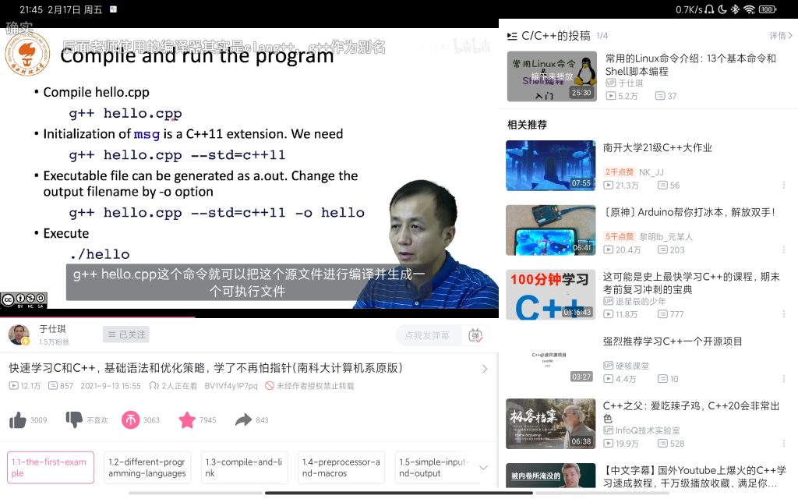
课程
由于之前已经学过C语言，部分内容将跳过。
Week1
the first example
1 2 3 4 5 6 7 8 9 10 11 12 13 14 15 16 17 //C++ example in C++11 #include <iostream> #include <vector> #include <string> using namespace std; int main() { vector<string> msg {"Hello", "C++", "World", "!"}; for (const string& word : msg) { cout << word << " "; } cout << endl; }
使用g++进行编译
•Compile hello.cpp
•Initialization of msg is a C++11 extension. We need
1 g++ hello.cpp --std=c++11
•Executable file can be generated as a.out. Change the output
filename by -o option
1 g++ hello.cpp --std=c++11 -o hello
•Execute
经过测试，windows版本上默认C++选项为c++17，linux上默认为c++14。
编译链接
当存在3个文件时，先编译，后链接。
1 2 3 4 5 6 7 8 9 10 11 12 13 14 15 16 17 18 #include <iostream> #include "mul.hpp" using namespace std; int main() { int a, b; int result; cout << "Pick two integers:"; cin >> a; cin >> b; result = mul(a, b); cout << "The result is " << result << endl; return 0; }
1 2 3 4 5 6 #include "mul.hpp" int mul(int a, int b) { return a * b; }
1 2 #pragma once int mul(int a, int b);
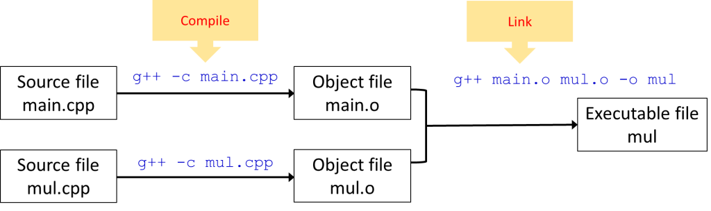
编译链接
也可以一起编译
1 g++ .\main.cpp .\mul.cpp -o mul
预处理和宏
•The preprocessor is executed before the compilation.
•Preprocessing directives begin with a # character
•Each directive occupies one line
•preprocessing instruction (define, undef, include, if, ifdef,
ifndef, else, elif, endif, line, error, pragma)
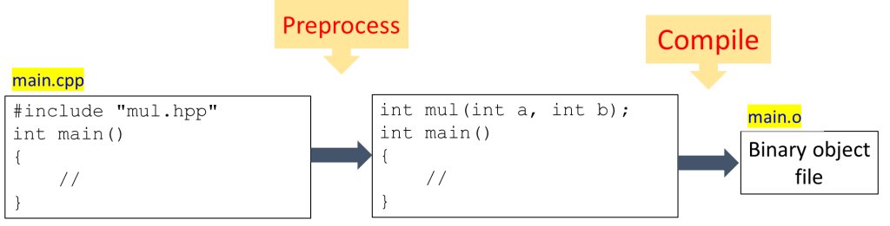
预处理
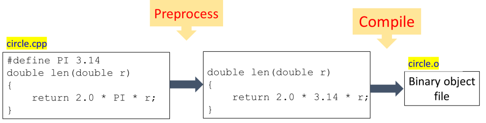
宏
输入输出
1 2 3 4 5 6 7 8 9 10 11 12 13 14 int main() { /* ... */ } int main(int argc, char *argv[]) { ... } int main(int argc, char **argv) { ... }
可以接收参数数组
1 2 3 4 5 6 7 8 #include <iostream> using namespace std; int main(int argc, char * argv[]) { for (int i = 0; i < argc; i++) cout << i << ": " << argv[i] << endl; }
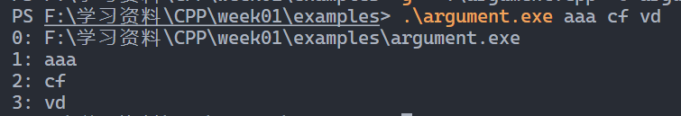
输入运行结果
Week2
interger
初始化方式
1 2 3 4 5 6 7 8 int num; num = 10;//do not forget this line int num = 10; int num (10); int num {10};
还可以使用圆括号或花括号进行初始化。
more interger types
char
•char: type for character, 8-bit integer indeed!
•signed char: signed 8-bit integer
•unsinged char: unsigned 8-bit integer
•char: either signed char or unsinged char
char.cpp
1 2 3 4 5 6 7 8 9 10 11 12 13 14 15 16 17 #include <iostream> using namespace std; int main() { char c1 = 'C'; char c2 = 80; char c3 = 0x50; char16_t c4 = u'于'; char32_t c5 = U'于'; cout << c1 << ":" << c2 << ":"<< c3 << endl; cout << +c1 << ":" << +c2 << ":" << +c3 << endl; cout << c4 << endl; cout << c5 << endl; return 0; }
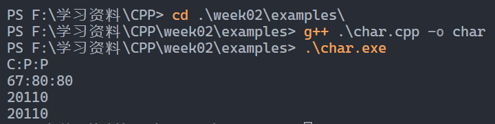
输出结果
bool
•A C++ keyword, but not a C keyword
•bool width: 1 byte (8 bits), NOT 1 bit!
•Value: true (1) or false (0)
长度为1个字节，而不是1位。
bool.cpp
1 2 3 4 5 6 7 8 9 10 11 12 13 14 #include <iostream> using namespace std; int main() { bool b1 = true; int i = b1; bool b2 = -256; cout << "i=" << i << endl; cout << "b1=" << b1 << endl; cout << "b2=" << b2 << endl; cout << true << endl; return 0; }
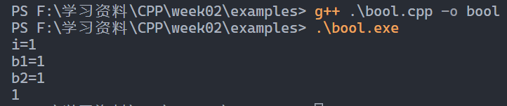
结果
bool非0即1。
在c语言中，c99中，引入stdbool.h头文件即可。
Fixed width integer types
since C++11
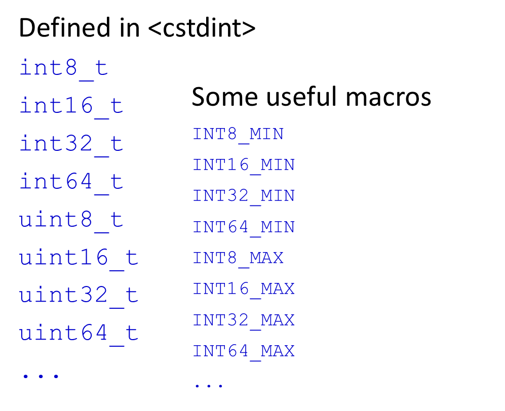
cstdint
intmax.cpp
1 2 3 4 5 6 7 8 #include <iostream> #include <cstdint> using namespace std; int main() { cout << "INT8_MAX=" << INT8_MAX << endl; return 0; }
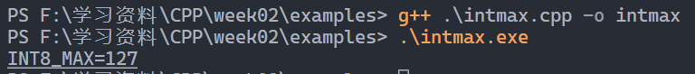
INT8_MAX结果
Floating-point Numbers
float.cpp
1 2 3 4 5 6 7 8 9 10 11 #include <iostream> #include <iomanip> using namespace std; int main() { float f1 = 1.2f; float f2 = f1 * 1000000000000000; cout << std::fixed << std::setprecision(15) << f1 << endl; cout << std::fixed << std::setprecision(15) << f2 << endl; return 0; }
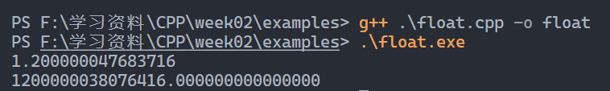
float结果
关于fixed、setprecision等的用法，参见详解C++中fixed，setprecision(),setw()的用法_羡君的博客-CSDN博客_c++
fixed
==>浮点数默认保留6位有效数字，但结尾是小数0，则会舍去，使用fixed能取消科学计数法（默认6位小数），使用setprecision(n) 则可以控制小数保留n位。
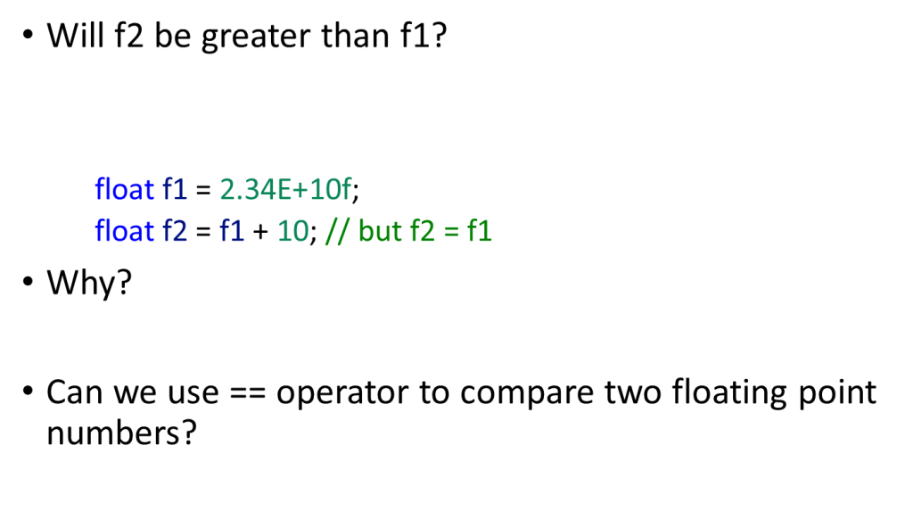
浮点数对比
inf and nan
nan.cpp
1 2 3 4 5 6 7 8 9 10 11 #include <iostream> using namespace std; int main() { float f1 = 2.0f / 0.0f; float f2 = 0.0f / 0.0f; cout << f1 << endl; cout << f2 << endl; return 0; }
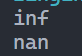
inf和nan结果
Arithmetic Operators
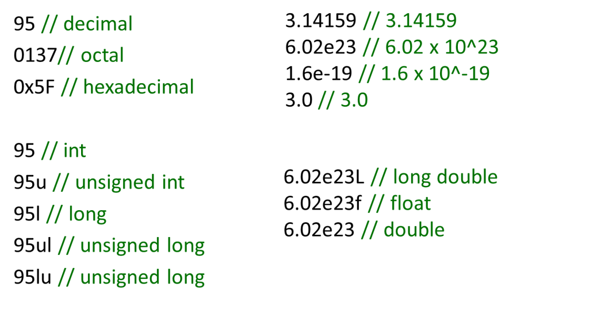
类型
auto
since C++11
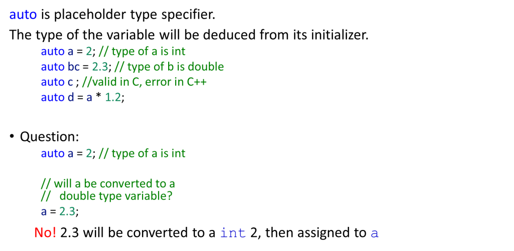
注意
类型初始化时就确定，不会再改变。
Divisions
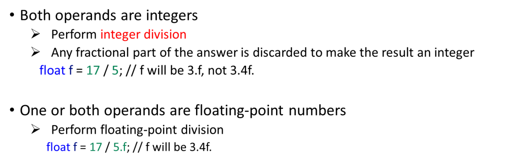
除法
Week3
goto Statement
goto.cpp
1 2 3 4 5 6 7 8 9 10 11 12 13 14 float mysquare(float value) { float result = 0.0f; if(value >= 1.0f || value <= 0) { cerr << "The input is out of range." << endl; goto EXIT_ERROR; } result = value * value; return result; EXIT_ERROR: //do sth such as closing files here return 0.0f; }
Week4
Arrays
没有初始化的话，值不确定。
array.cpp
1 2 3 4 5 6 7 8 9 10 11 12 13 14 15 16 17 #include <iostream> using namespace std; int main() { int num_array1[5]; //uninitialized array, random values int num_array2[5] = {0, 1, 2, 3, 4}; //initialization for(int idx = 0; idx < 5; idx++) cout << num_array1[idx] << " "; cout << endl; for(int idx = 0; idx < 5; idx++) cout << num_array2[idx] << " "; cout << endl; return 0; }
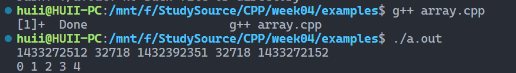
array
Variable-length arrays
数组长度在运行时确定。
variable-array.cpp
1 2 3 4 5 6 7 8 9 10 11 12 13 14 15 16 #include <iostream> using namespace std; int main() { int num_array1[5] = {0,1}; // fixed length array, initialized to {0,1,0,0,0} cout << "sizeof(num_array1) = " << sizeof(num_array1) << endl; int len = 0; while ( len < 10 ) { int num_array2[len]; //variable-length array cout << "len = " << len; cout << ", sizeof(num_array2)) = " << sizeof(num_array2) << endl; len ++; } }
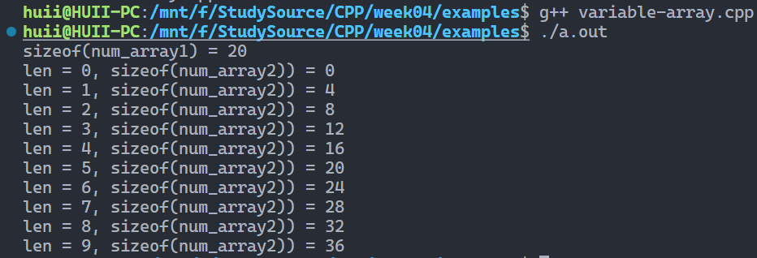
变长数组
注意：变长数组不要初始化
Arrays of unknown size
未知长度数组
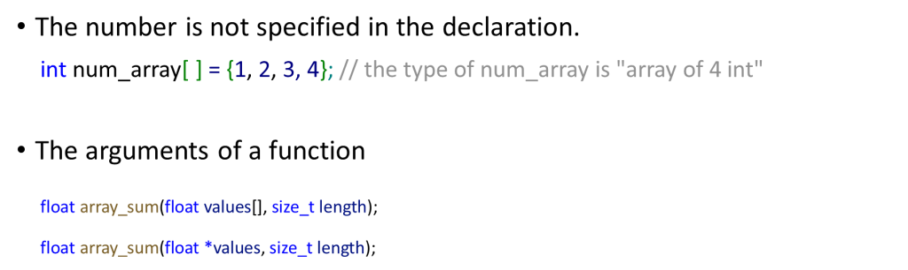
未知长度数组
Element accessing
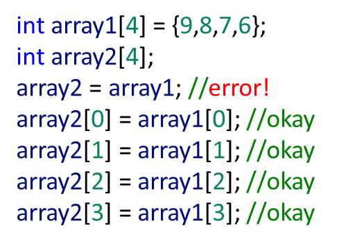
数组读写
注意，c/cpp中不会进行越界检查。
index-bound.cpp
1 2 3 4 5 6 7 8 9 10 11 12 13 14 #include <iostream> using namespace std; int main() { int num_array[5]; for(int idx = -1; idx <= 5; idx++) //out of bounds num_array[idx] = idx * idx; for(int idx = -1; idx <= 5; idx++) //out of bounds cout << "num_array[" << idx << "] = " << num_array[idx] << endl; return 0; }
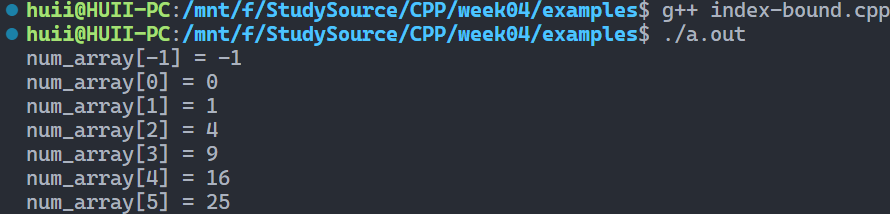
数组越界
Multidimensional arrays
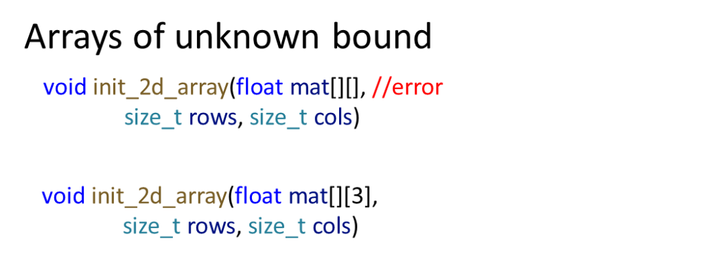
多维数组
const Arrays
const-array.cpp
1 2 3 4 5 6 7 8 9 10 11 12 13 14 15 16 17 18 19 20 21 22 23 24 25 26 27 28 29 #include <iostream> using namespace std; //float array_sum(const float *values, size_t length) //float array_sum(const float values[4], size_t length) float array_sum(const float values[], size_t length) { float sum = 0.0f; for (int i = 0; i < length; i++) { sum += values[i]; //values[i] = 0; //error } return sum; } int main() { // const float PI = 3.1415926f; // PI += 1.f; // error // const float values[4] = {1.1f, 2.2f, 3.3f, 4.4f}; // values[0] = 1.0f; // error float values[4] = {1.1f, 2.2f, 3.3f, 4.4f}; float sum = array_sum(values, 4); cout << "sum = " << sum << endl; return 0; }
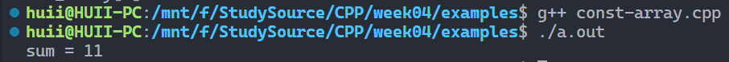
const array
可以防止对元素进行误操作。
Strings
Array-style strings
•An array-style string (null-terminated strings/arrays of characters)
is a series of characters stored in bytes in memory.
•This kind of strings can be declared as follows
1 char rabbit[16] = {'P', 'e', 't', 'e', 'r'};
initchar.cpp
1 2 3 4 5 6 7 8 9 10 11 12 13 14 15 16 17 18 19 20 21 22 23 #include <iostream> #include <cstring> using namespace std; int main() { char rabbit[16] = {'P', 'e', 't', 'e', 'r'}; cout << "String length is " << strlen(rabbit) << endl; for(int i = 0; i < 16; i++) cout << i << ":" << +rabbit[i] << "(" << rabbit[i] << ")" << endl; char bad_pig[9] = {'P', 'e', 'p', 'p', 'a', ' ', 'P', 'i', 'g'}; char good_pig[10] = {'P', 'e', 'p', 'p', 'a', ' ', 'P', 'i', 'g', '\0'}; cout << "Rabbit is (" << rabbit << ")" << endl; cout << "Pig's bad name is (" << bad_pig << ")" << endl; cout << "Pig's good name is (" << good_pig << ")" << endl; char name[10] = {'Y', 'u', '\0', 'S', '.', '0'}; cout << strlen(name) << endl; return 0; }
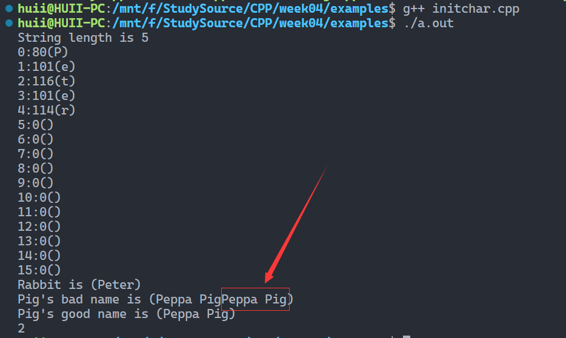
出现多出来的内容
String literals
•It isn’t convenient to initial a string character by character.
•String literals can help.
1 char name1[] = "Southern University of Science and Technology";
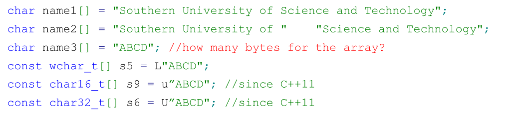
定义字符串
字符串操作
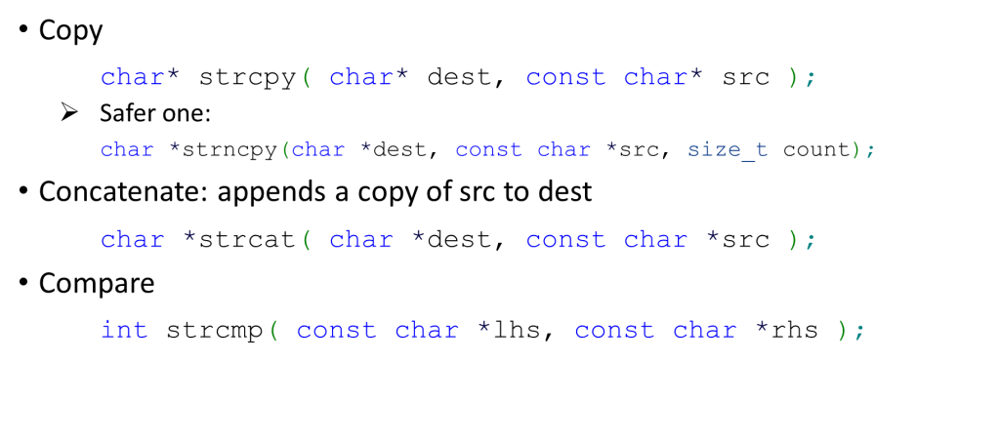
字符串操作
strncpy：拷贝count个，防止越界。
stringop.cpp
1 2 3 4 5 6 7 8 9 10 11 12 13 14 15 16 17 18 19 20 21 22 23 #include <iostream> #include <cstring> using namespace std; int main() { char str1[] = "Hello, \0CPP"; char str2[] = "SUSTech"; char result[128]; for(int i = 0; i < 16; i++) cout << i << ":" << +str1[i] << "(" << str1[i] << ")" << endl; strcpy(result, str1); cout << "Result = " << result << endl; strcat(result, str2); cout << "Result = " << result << endl; cout << "strcmp() = " << strcmp(str1, str2) << endl; //strcat(str1, str2); //danger operation! //cout << "str1 = " << str1 << endl; }
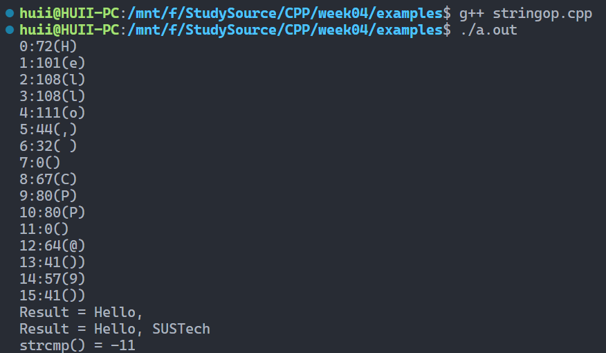
字符串操作
string class
•Null-terminated strings are easy to be out of bound, and to cause
problems.
•string class provides functions to manipulate and examinate
strings.
stdstring.cpp
1 2 3 4 5 6 7 8 9 10 11 12 13 14 15 16 17 18 #include <iostream> #include <string> using namespace std; int main() { std::string str1 = "Hello"; std::string str2 = "SUSTech"; std::string result = str1 + ", " + str2; cout << "result = " + result << endl; cout << "The length is " << result.length() << endl; cout << "str1 < str2 is " << (str1 < str2) << endl; return 0; }
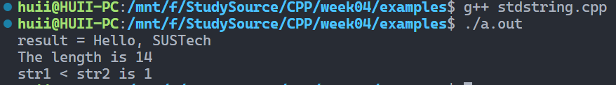
string类字符串
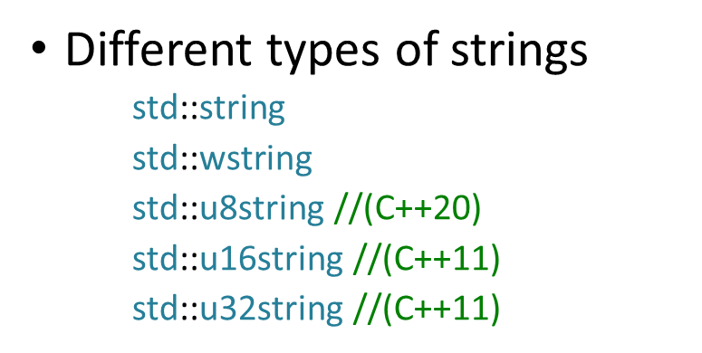
不同的string类
Structures, Unions and
Enumerations
struct
struct.c
1 2 3 4 5 6 7 8 9 10 11 12 13 14 15 16 17 18 19 20 21 22 23 24 25 26 27 28 29 30 31 32 33 #include <stdio.h> #include <string.h> #include <stdbool.h> // typedef // struct _Student{ // char name[4]; // int born; // bool male; // } Student; struct Student{ char name[4]; int born; bool male; }; int main() { struct Student stu = {"Yu", 2000, true}; //initialization // strcpy(stu.name, "Yu"); // stu.born = 2000; // stu.male = true; printf("Student %s, born in %d, gender %s\n", stu.name, stu.born, stu.male ? "male" : "female"); struct Student students[100]; students[50].born = 2002; return 0; }
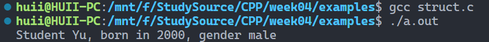
结构体结果输出
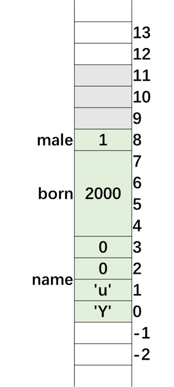
结构体内存
注意：在c语言下，初始化Student要给struct
Student，如果要去除struct，则要typeof
1 2 3 4 5 6 typedef struct _Student{ char name[4]; int born; bool male; } Student;
Structure padding
•In order to align the data in memory, some empty bytes will be
padded
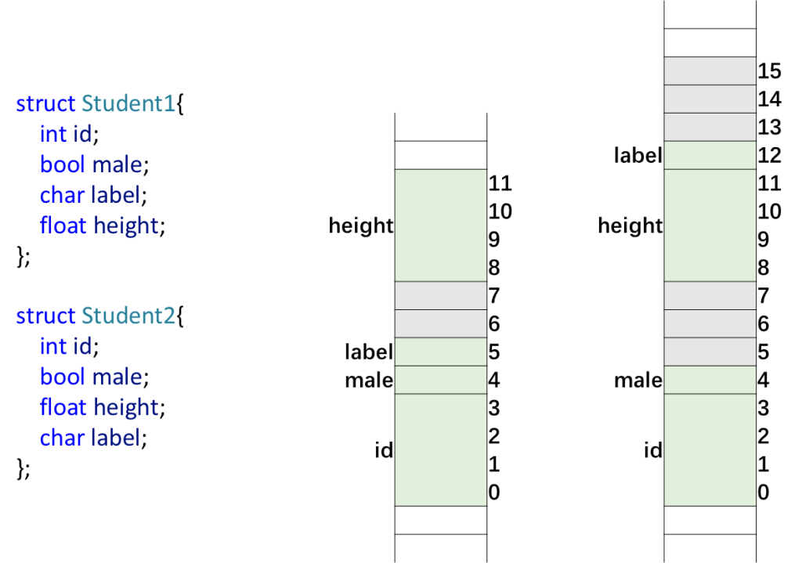
补齐问题
存储会内存对齐，因此数据顺序不一样，导致占用大小不同，第一个用12字节，第二个用16个字节。
struct in C and C++
•struct and class in C++ are identical except for several
features.
1 2 3 4 5 6 7 8 struct Student1{ int id; bool male; char label; float height; }; Student1 stu; stu.id = 123;
No typedef needed in C++!
union
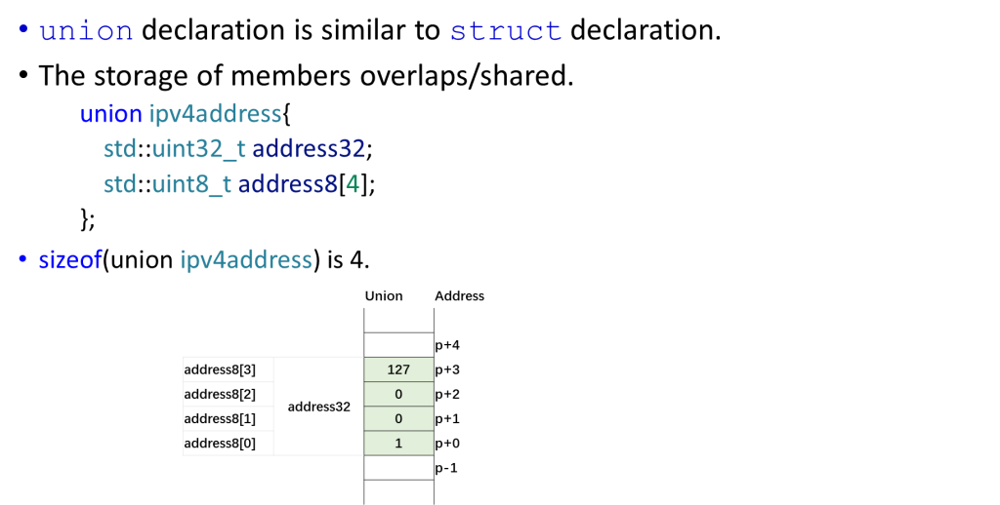
结构体
结构体所有成员共享同一内存，大小以最大的为准。一个地址多个名字。
1 2 3 4 5 6 7 8 9 10 11 12 13 14 15 16 17 18 19 20 21 22 23 24 25 26 27 28 29 30 #include <iostream> using namespace std; union ipv4address{ std::uint32_t address32; std::uint8_t address8[4]; }; int main() { union ipv4address ip; cout << "sizeof(ip) = " << sizeof(ip) << endl; ip.address8[3] = 127; ip.address8[2] = 0; ip.address8[1] = 0; ip.address8[0] = 1; cout << "The address is " ; cout << +ip.address8[3] << "."; cout << +ip.address8[2] << "."; cout << +ip.address8[1] << "."; cout << +ip.address8[0] << endl; cout << std::hex; cout << "in hex " << ip.address32 << endl; return 0; }
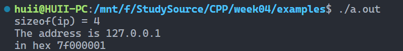
union
enum
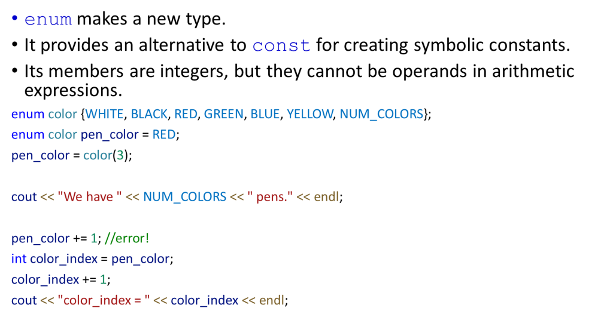
枚举
enum.cpp
1 2 3 4 5 6 7 8 9 10 11 12 13 14 15 16 17 18 19 20 21 22 23 24 25 26 27 28 29 30 31 32 33 34 35 36 37 38 39 40 41 42 43 44 45 46 47 48 49 50 51 52 53 54 55 56 57 58 59 60 61 62 63 64 65 #include <iostream> using namespace std; enum color {WHITE, BLACK, RED, GREEN, BLUE, YELLOW, NUM_COLORS}; enum datatype {TYPE_INT8=1, TYPE_INT16=2, TYPE_INT32=4, TYPE_INT64=8}; struct Point{ enum datatype type; union { std::int8_t data8[3]; std::int16_t data16[3]; std::int32_t data32[3]; std::int64_t data64[3]; }; }; size_t datawidth(struct Point pt) { return size_t(pt.type) * 3; } int64_t l1norm(struct Point pt) { int64_t result = 0; switch(pt.type) { case (TYPE_INT8): result = abs(pt.data8[0]) + abs(pt.data8[1]) + abs(pt.data8[2]); break; case (TYPE_INT16): result = abs(pt.data16[0]) + abs(pt.data16[1]) + abs(pt.data16[2]); break; case (TYPE_INT32): result = abs(pt.data32[0]) + abs(pt.data32[1]) + abs(pt.data32[2]); break; case (TYPE_INT64): result = abs(pt.data64[0]) + abs(pt.data64[1]) + abs(pt.data64[2]); break; } return result; } int main() { enum color pen_color = RED; pen_color = color(3); //convert int to enum cout << "We have " << NUM_COLORS << " pens." << endl; //pen_color += 1; //error! int color_index = pen_color; color_index += 1; cout << "color_index = " << color_index << endl; //declaration and initialization struct Point point1 = {.type=TYPE_INT8, .data8={-2,3,4}}; struct Point point2 = {.type=TYPE_INT32, .data32={1,-2,3}}; cout << "Data width = " << datawidth(point1) << endl; cout << "Data width = " << datawidth(point2) << endl; cout << "L1 norm = " << l1norm(point1) << endl; cout << "L1 norm = " << l1norm(point2) << endl; return 0; }
typedef
1 2 3 4 5 6 7 8 9 10 11 12 13 14 15 16 17 18 19 20 21 22 23 24 25 26 27 28 29 30 31 32 33 #include <iostream> using namespace std; typedef int myint; typedef unsigned char vec3b[3]; typedef struct _rgb_struct{ // name _rgb_struct can be omit unsigned char r; unsigned char g; unsigned char b; } rgb_struct; int main() { myint num = 32; // the following two lines are identical //unsigned char color[3] = {255, 0, 255}; vec3b color = {255, 0, 255}; cout << hex; cout << "R=" << +color[0] << ", "; cout << "G=" << +color[1] << ", "; cout << "B=" << +color[2] << endl; rgb_struct rgb = {0, 255, 128}; cout << "R=" << +rgb.r << ", "; cout << "G=" << +rgb.g << ", "; cout << "B=" << +rgb.b << endl; cout << sizeof(rgb.r) << endl; cout << sizeof(+rgb.r) << endl; //why 4? return 0; }
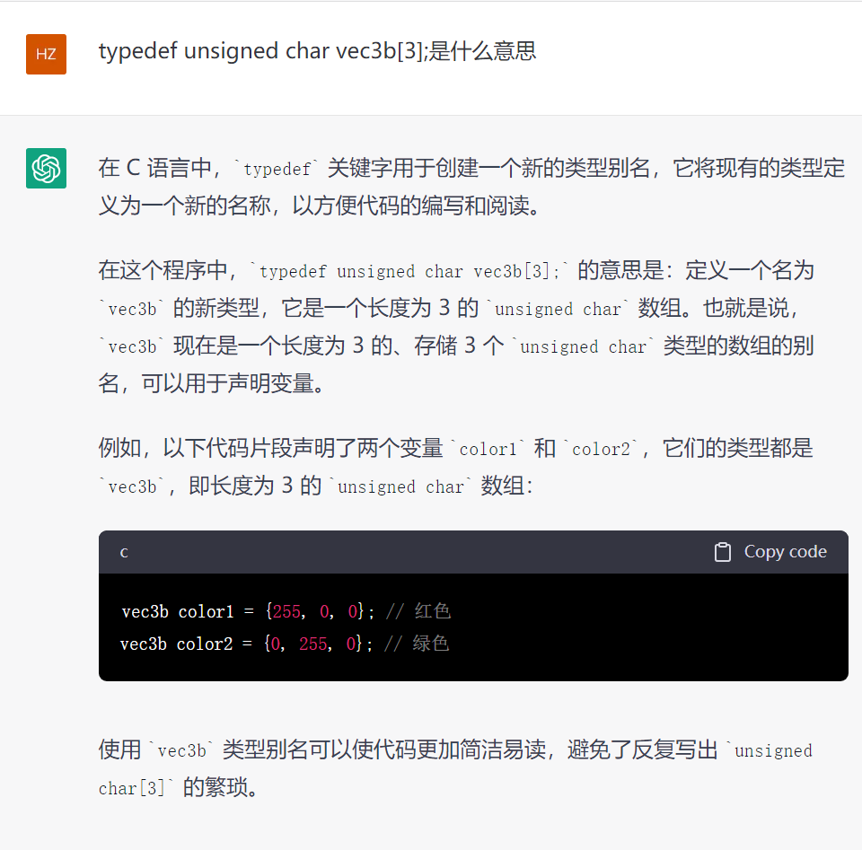
代码解释
Week5
Pointers
•A pointer is declared like a variable, but with * after the
type.
•What stored in a pointer variable is an address.
•Operator & can take the address of an object or a variable of
fundamental types. Operator * can take the content that the pointer
points to
&取地址，*取内容
Differences between
a pointer and an array
•Array is a constant pointer.
•The total size of all elements in an array can be got by operator
sizeof
•sizeof operator to a pointer will return the size of the address (4
or 8)
1 2 3 4 5 int numbers[4] = {0, 1, 2, 3}; int * p = numbers; cout << sizeof(numbers) << endl; //4*sizeof(int) cout << sizeof(p) << endl; // 4 or 8 cout << sizeof(double *) << endl; // 4 or 8
Allocate memory: C style
动态内存管理
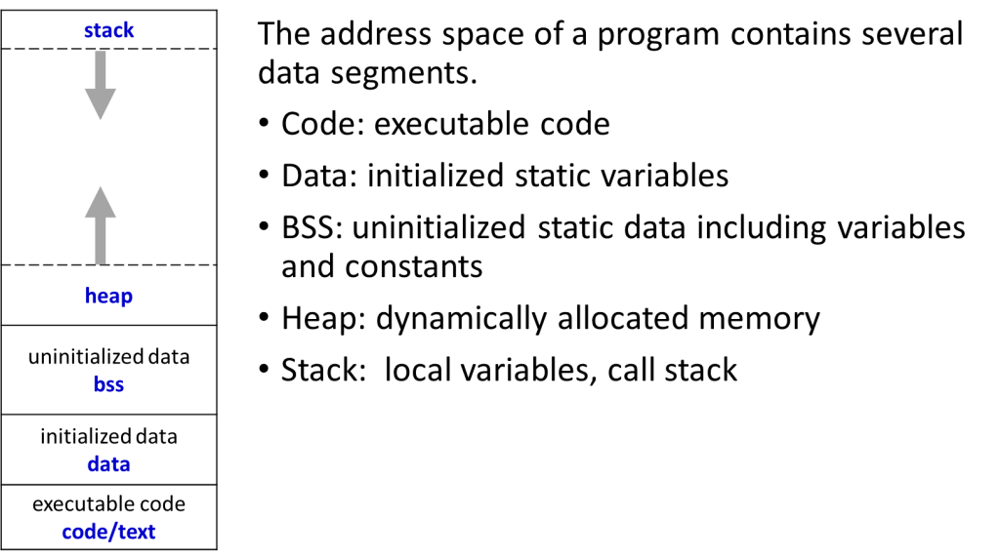
程序内存
临时局部变量，如int i存放在stack中，而动态申请内存则存放heap中。stack的地址越申请越小，heap的越申请越大。
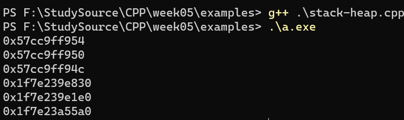
windows下运行结果
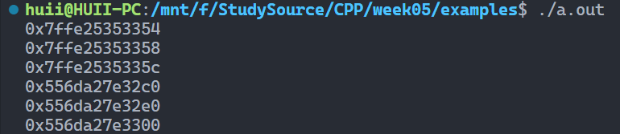
在Linux下（x86）似乎不符合？
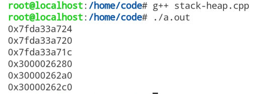
在arm的linux（小米平板5pro）运行结果
Memory allocation
•Allocate size bytes of uninitialized storage.
void* malloc( size_t size )
•Allocate 4 bytes and convert the pointer to (int *) explicitly.
int * p1 = (int*) malloc (4);
•对于int * p1 = (int*) malloc (3);申请了3个字节，但可以使用第4个字节，无严重后果。
Memory deallocation
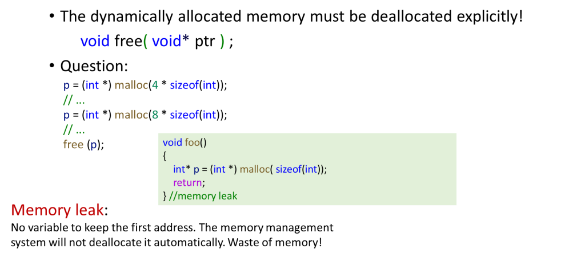
img
哪里申请，哪里释放。
memoryleak.c
1 2 3 4 5 6 7 8 9 10 11 12 13 14 15 16 17 18 19 20 21 22 23 24 25 26 27 28 #include <stdio.h> #include <stdlib.h> void foo() { int* p = (int *) malloc( sizeof(int)); return; } //memory leak int main() { int * p = NULL; p = (int *) malloc(4 * sizeof(int)); // some statements p = (int *) malloc(8 * sizeof(int)); // some statements free (p); // the first memory will not be freed for(int i = 0; i < 1024; i++) { p = (int *) malloc(1024 * 1024 * 1024); } printf("End\n"); return 0; }
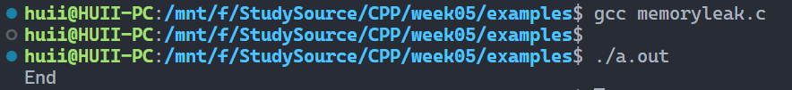
运行结果
申请了1T内存，由于操作系统保护机制，程序没有崩掉。
Allocate memory: C++ style
Operator new and new[]
•Operator new is similar with malloc() but with more features.
1 2 3 4 5 6 7 8 9 10 11 12 13 14 15 16 17 18 19 20 21 22 23 24 25 26 //allocate an int, default initializer (do nothing) int * p1 = new int; //allocate an int, initialized to 0 int * p2 = new int(); //allocate an int, initialized to 5 int * p3 = new int(5); //allocate an int, initialized to 0 int * p4 = new int{};//C++11 //allocate an int, initialized to 5 int * p5 = new int {5};//C++11 //allocate a Student object, default initializer Student * ps1 = new Student; //allocate a Student object, initialize the members Student * ps2 = new Student {"Yu", 2020, 1}; //C++11 //allocate 16 int, default initializer (do nothing) int * pa1 = new int[16]; //allocate 16 int, zero initialized int * pa2 = new int[16](); //allocate 16 int, zero initialized int * pa3 = new int[16]{}; //C++11 //allocate 16 int, the first 3 element are initialized to 1,2,3, the rest 0 int * pa4 = new int[16]{1,2,3}; //C++11 //allocate memory for 16 Student objects, default initializer Student * psa1 = new Student[16]; //allocate memory for 16 Student objects, the first two are explicitly initialized Student * psa2 = new Student[16]{{"Li", 2000,1}, {"Yu", 2001,1}}; //C++11
Operator delete and delete[]
•Destroys object/objects allocated by new and free memory
1 2 3 4 5 6 7 8 9 10 11 12 //deallocate memory delete p1; //deallocate memory delete ps1; //deallocate the memory of the array delete pa1; //deallocate the memory of the array delete []pa2; //deallocate the memory of the array, and call the destructor of the first element delete psa1; //deallocate the memory of the array, and call the destructors of all the elements delete []psa2;
注意，如果数组里是结构体或者对象，delete psa1;只会删除第一个，因此建议写成delete []psa2;。
Week6
Functions
How are functions called?
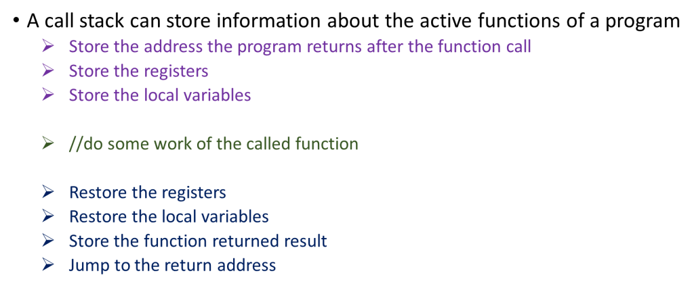
函数调用
Function Parameters
•The symbolic name for "data" that passes into a function.
Two ways to pass into a function:
•Pass by value
•Pass by reference
Pass by value: fundamental
type
•The parameter is a copy of the original variable
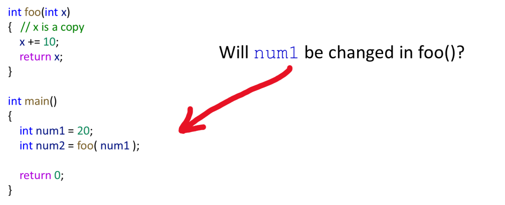
传递拷贝
Pass by value: pointer
传递的是地址的拷贝，函数内部指针地址的修改不会影响到外部指针的地址。
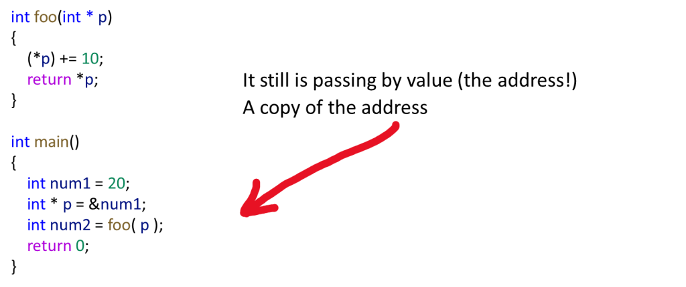
传地址
Pass by value: structure
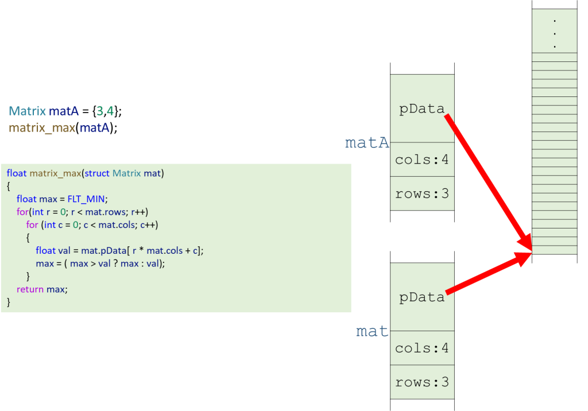
传递结构体
结构体内容会被拷贝，但是由于pData是指针，修改指向的内容，则原始的也会被修改。
References
•References are in C++, not in C.
•A reference is an alias to an already-existing variable/object.
相当于别名
1 2 3 int num = 0; int & num_ref = num; num_ref = 10;
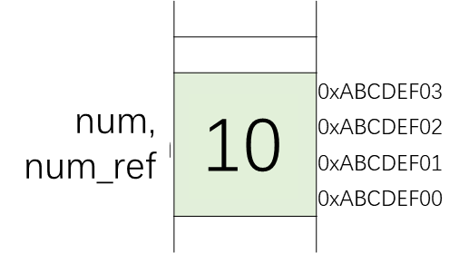
引用
•A reference to an object
1 2 3 4 5 6 Matrix matA = {3,4}; matA.pData = new float[matA.rows * matA.cols]{}; Matrix & matA_ref = matA; Matrix * pMatA = &matA;
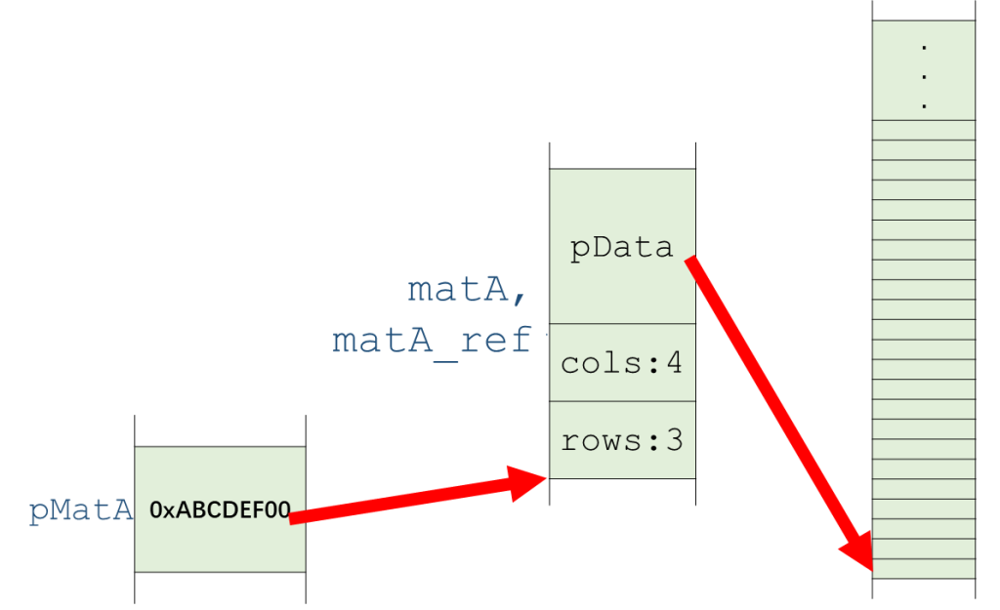
指针与引用
•A reference must be initialized after its declaration.
1 2 int & num_ref; // error Matrix & mat_ref; // error
• Reference VS Pointer: References are much safer
java中使用引用代替了指针，更加安全。
References as function
parameters
•No data copying in the reference version; Better efficiency The
modification to a reference will affect the original object
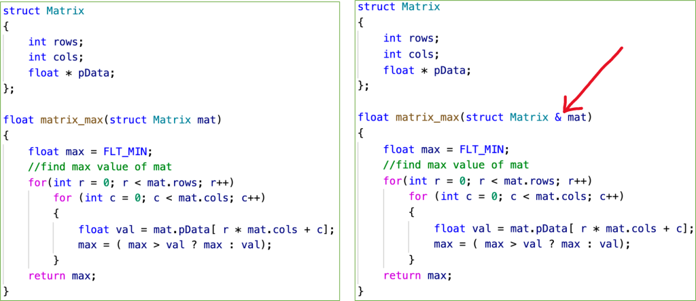
引用做函数参数
Inline functions
•Stack operations and jumps are needed for a function call.
•It is a heavy cost for some frequently called tiny functions.
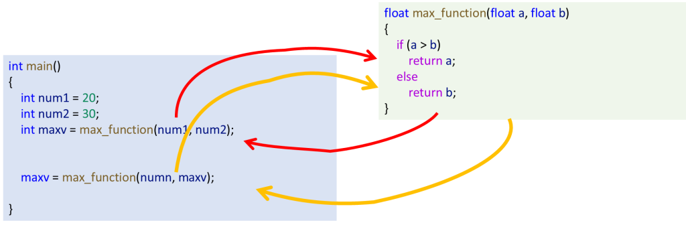
需要不断跳转
•The generated instructions by a compiler can be as follows to
improve efficiency
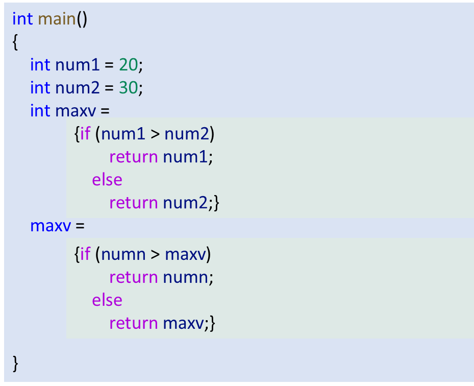
可能指令结果
建议编译器
Why not use a macros?
为啥不用宏？#define MAX_MACRO(a, b) (a)>(b) ? (a) : (b)
•The source code will be replaced by a preprocessor.
•Surely no cost of a function call,
•And a, b can be any types which can compare.
宏很危险。
Week7
argument与parameter区别：对float norm(float x, float y, float z = 0);0是argument ，z则是parameter 。
Default Arguments
•A feature in C++ (not C).
•To call a function without providing one or more trailing
arguments.
默认参数应该在尾部
default-argument.cpp
1 2 3 4 5 6 7 8 9 10 11 12 13 14 15 16 17 18 19 20 #include <iostream> #include <cmath> using namespace std; float norm(float x, float y, float z); float norm(float x, float y, float z = 0); float norm(float x, float y = 0, float z); int main() { cout << norm(3.0f) << endl; cout << norm(3.0f, 4.0f) << endl; cout << norm(3.0f, 4.0f, 5.0f) << endl; return 0; } float norm(float x, float y, float z) { return sqrt(x * x + y * y + z * z); }
运行结果
对于float norm(float x, float y = 0, float z);，虽然默认参数不在尾部，但是前面有了个float norm(float x, float y, float z = 0);此时z的默认参数是0。若将这两行对换，或将float norm(float x, float y = 0, float z);
Function Overloading
c++特性
函数重载
•Which function to choose? The compiler will perform name lookup.
•Argument-dependent lookup, also known as ADL.
The return type will not be considered in name lookup.
1 2 3 4 5 6 7 8 9 10 11 12 13 14 15 int sum(int x, int y) { cout << "sum(int, int) is called" << endl; return x + y; } float sum(float x, float y) { cout << "sum(float, float) is called" << endl; return x + y; } double sum(double x, double y) { cout << "sum(double, double) is called" << endl; return x + y; }
Function Templates
•A function template is not a type, or a function, or any other
entity.
•No code is generated from a source file that contains only template
definitions.
•The template arguments must be determined, then the compiler can
generate an actual function
1 2 3 4 5 6 7 8 9 10 11 12 13 14 template<typename T> T sum(T x, T y) { cout << "The input type is " << typeid(T).name() << endl; return x + y; } // instantiates sum<double>(double, double) template double sum<double>(double, double); // instantiates sum<char>(char, char), template argument deduced template char sum<>(char, char); // instantiates sum<int>(int, int), template argument deduced template int sum(int, int);
template也会隐式实例化。
template2.cpp
1 2 3 4 5 6 7 8 9 10 11 12 13 14 15 16 17 18 19 20 #include <iostream> #include <typeinfo> using namespace std; template<typename T> T sum(T x, T y) { cout << "The input type is " << typeid(T).name() << endl; return x + y; } // Explicitly instantiate template double sum<double>(double, double); int main() { auto val = sum(4.1, 5.2); cout << val << endl; return 0; }
template
Function template
specialization
结构体模板加法操作
需要针对特例专门定义函数。
specialization.cpp
1 2 3 4 5 6 7 8 9 10 11 12 13 14 15 16 17 18 19 20 21 22 23 24 25 26 27 28 29 30 31 32 33 34 35 36 37 38 39 40 41 #include <iostream> #include <typeinfo> using namespace std; template<typename T> T sum(T x, T y) { cout << "The input type is " << typeid(T).name() << endl; return x + y; } struct Point { int x; int y; }; // Specialization for Point + Point operation template<> Point sum<Point>(Point pt1, Point pt2) { cout << "The input type is " << typeid(pt1).name() << endl; Point pt; pt.x = pt1.x + pt2.x; pt.y = pt1.y + pt2.y; return pt; } int main() { //Explicit instantiated functions cout << "sum = " << sum(1, 2) << endl; cout << "sum = " << sum(1.1, 2.2) << endl; Point pt1 {1, 2}; Point pt2 {2, 3}; Point pt = sum(pt1, pt2); cout << "pt = (" << pt.x << ", " << pt.y << ")" << endl; return 0; }
结果
特例化需要template<>，实例化则不需要<>和函数体。
Function Pointers and
References
函数指针与函数引用
Function pointers
•norm_ptr is a pointer, a function pointer.
•The function should have two float parameters, and returns
float.
1 2 3 4 5 6 7 8 9 float norm_l1(float x, float y); float norm_l2(float x, float y); float (*norm_ptr)(float x, float y); norm_ptr = norm_l1; //Pointer norm_ptr is pointing to norm_l1 norm_ptr = &norm_l2; //Pointer norm_ptr is pointing to norm_l2 float len1 = norm_ptr(-3.0f, 4.0f); //function invoked float len2 = (*norm_ptr)(-3.0f, 4.0f); //function invoked
•A function pointer can be an argument and pass to a function.
将函数传入另一个函数中，作为回调函数。
1 2 3 4 <stdlib.h> void qsort( void *ptr, size_t count, size_t size, int (*comp)(const void *, const void *) );
Function references
1 2 3 float norm_l1(float x, float y); //declaration float norm_l2(float x, float y); //declaration float (&norm_ref)(float x, float y) = norm_l1; //norm_ref is a function reference
Recursive Functions 递归
Week8
C/C++ with ARM
Speedup Your Program
Some Tips on Optimization
•Choose an appropriate algorithm
•Clear and simple code for the compiler to optimize
•Optimize code for memory
•Do not copy large memory
•No printf()/cout in loops
•Table lookup (sin(), cos() ...)
•SIMD, OpenMP
SIMD: Single instruction,
multiple data
一个指令处理多组数组
SIMD
An Example with SIMD and
OpenMP
arm上运行测试
使用cmake .. -DCMAKE_BUILD_TYPE=Release可以产生release版本。
release版本
SIMD+OpenMP计算错误。
Avoid Memory Copy
数据存储
•How many bytes for a row of Matrix 4(row)x3(col)?
ØCan be 3, 4, 8, and any other values >=3.
ØMemory alignment for SIMD
扣取一个小区域
Week9
Classes and Objects
Structures
struct
Classes
class
firstclass.cpp
1 2 3 4 5 6 7 8 9 10 11 12 13 14 15 16 17 18 19 20 21 22 23 24 25 26 27 28 29 30 31 32 33 34 35 36 37 38 39 40 #include <iostream> #include <cstring> class Student { public: char name[4]; int born; bool male; void setName(const char * s) { strncpy(name, s, sizeof(name)); } void setBorn(int b) { born = b; } void setGender(bool isMale) { male = isMale; } void printInfo() { std::cout << "Name: " << name << std::endl; std::cout << "Born in " << born << std::endl; std::cout << "Gender: " << (male ? "Male" : "Female") << std::endl; } }; int main() { Student yu; yu.setName("Yu"); yu.setBorn(2000); yu.setGender(true); yu.born = 2001; // it can also be manipulated directly yu.printInfo(); std::cout << "It's name is " << yu.name << std::endl; return 0; }
第一个类
Access Specifiers
•You can protect data members by access specifier private.
•Then data member can only be accessed by well designed member
functions.
不写限定符，默认是private
access-attribute.cpp
1 2 3 4 5 6 7 8 9 10 11 12 13 14 15 16 17 18 19 20 21 22 23 24 25 26 27 28 29 30 31 32 33 34 35 36 37 38 39 40 #include <iostream> #include <cstring> class Student { private: char name[4]; int born; bool male; public: void setName(const char * s) { strncpy(name, s, sizeof(name)); } void setBorn(int b) { born = b; } void setGender(bool isMale) { male = isMale; } void printInfo() { std::cout << "Name: " << name << std::endl; std::cout << "Born in " << born << std::endl; std::cout << "Gender: " << (male ? "Male" : "Female") << std::endl; } }; int main() { Student yu; yu.setName("Yu"); yu.setBorn(2000); yu.setGender(true); yu.born = 2001; // you cannot access a private member yu.printInfo(); return 0; }
报错
Member Functions
成员函数
在类内定义的函数，默认是inline。
建议：简单的适合作为inline的函数可放在类内，其他放在类外。
function.cpp
1 2 3 4 5 6 7 8 9 10 11 12 13 14 15 16 17 18 19 20 21 22 23 24 25 26 27 28 29 30 31 32 33 34 35 36 37 38 39 40 41 42 43 #include <iostream> #include <cstring> class Student { private: char name[4]; int born; bool male; public: void setName(const char * s) { strncpy(name, s, sizeof(name)); } void setBorn(int b) { born = b; } // the declarations, the definitions are out of the class void setGender(bool isMale); void printInfo(); }; void Student::setGender(bool isMale) { male = isMale; } void Student::printInfo() { std::cout << "Name: " << name << std::endl; std::cout << "Born in " << born << std::endl; std::cout << "Gender: " << (male ? "Male" : "Female") << std::endl; } int main() { Student yu; yu.setName("Yu"); yu.setBorn(2000); yu.setGender(true); yu.printInfo(); return 0; }
File Structures
•The source code can be placed into multiple files
类定义可放在头文件中
类放在头文件中
main.cpp
1 2 3 4 5 6 7 8 9 10 11 #include "student.hpp" int main() { Student yu; yu.setName("Yu"); yu.setBorn(2000); yu.setGender(true); yu.printInfo(); return 0; }
student.cpp
1 2 3 4 5 6 7 8 9 10 11 12 13 #include <iostream> #include "student.hpp" void Student::setGender(bool isMale) { male = isMale; } void Student::printInfo() { std::cout << "Name: " << name << std::endl; std::cout << "Born in " << born << std::endl; std::cout << "Gender: " << (male ? "Male" : "Female") << std::endl; }
student.hpp
1 2 3 4 5 6 7 8 9 10 11 12 13 14 15 16 17 18 19 20 21 22 #pragma once #include <cstring> class Student { private: char name[4]; int born; bool male; public: void setName(const char * s) { strncpy(name, s, sizeof(name)); } void setBorn(int b) { born = b; } // the declarations, the definitions are out of the class void setGender(bool isMale); void printInfo(); };
CMakeLists.txt
1 2 3 4 5 cmake_minimum_required(VERSION 3.12) project(persondemo) ADD_EXECUTABLE(persondemo main.cpp student.cpp)
运行结果
Constructors and Destructors
Constructors
Different from struct in C, a constructor will be invoked when
creating an object of a class.
struct in C: allocate memory
class in C++: allocate memory & invoke a constructor
But ... No constructor is defined explicitly in previous examples.
The compiler will generate one with empty body
1、申请内存
2、构造函数
编译器会自动生成空的构造函数
构造函数：
•The same name with the class.
•Have no return value
三种构造函数：
1.无参
1 2 3 4 5 6 Student() { name[0] = 0; born = 0; male = false; }
2.有参
1 2 3 4 Student(const char * initName): born(0), male(true) { setName(initName); }
3.跟在后面初始化
1 2 3 4 Student(const char * initName): born(0), male(true) { setName(initName); }
四种初始化
1 2 3 4 5 6 Student yu; yu.printInfo(); yu.setName("Yu"); yu.setBorn(2000); yu.setGender(true); yu.printInfo();
1 2 Student li("li"); li.printInfo();
1 2 3 Student xue = Student("XueQikun", 1962, true); //a question: what will happen since "XueQikun" has 4+ characters? xue.printInfo();
1 2 3 Student * zhou = new Student("Zhou", 1991, false); zhou->printInfo(); delete zhou;
其中前三种是在栈上申请，第四种在堆上申请。
Destructors
•The destructor will be invoked when the object is destroyed.
•Be formed from the class name preceded by a tilde (~)
•Have no return value, no parameters
1 2 3 4 5 6 7 8 9 10 11 12 13 14 15 16 class Student { // ... public: Student() { name = new char[1024]{0}; born = 0; male = false; cout << "Constructor: Person()" << endl; } ~Student() { delete [] name; } };
析构函数在该对象的作用域结束时就被销毁了，但是对于动态申请（new）的，需要在delete后才会执行析构函数。
对于数组数据
1 2 3 4 5 Student * class1 = new Student[3]{ {"Tom", 2000, true}, {"Bob", 2001, true}, {"Amy", 2002, false}, };
如果使用delete class1，只会调用第一个析构函数，而delete []class1则会调用三个析构。
this Pointer
•All methods in a function have a this pointer.
•It is set to the address of the object that invokes the method.
this.cpp
1 2 3 4 5 6 7 8 9 10 11 12 13 14 15 16 17 18 19 20 21 22 23 24 25 26 27 28 29 30 31 32 33 34 35 36 37 38 39 40 41 42 43 44 45 46 47 48 49 50 51 52 53 54 55 56 57 58 59 60 61 62 63 64 65 66 67 68 69 70 71 #include <iostream> #include <cstring> using namespace std; class Student { private: char * name; int born; bool male; public: Student() { name = new char[1024]{0}; born = 0; male = false; cout << "Constructor: Person()" << endl; } Student(const char * name, int born, bool male) { this->name = new char[1024]; this->setName(name); this->born = born; this->male = male; cout << "Constructor: Person(const char, int , bool)" << endl; } ~Student() { cout << "To destroy object: " << name << endl; delete [] name; } void setName(const char * name) { strncpy(this->name, name, 1024); } void setBorn(int born) { this->born = born; } // the declarations, the definitions are out of the class void setGender(bool isMale); void printInfo(); }; void Student::setGender(bool isMale) { male = isMale; } void Student::printInfo() { std::cout << "Name: " << name << std::endl; std::cout << "Born in " << born << std::endl; std::cout << "Gender: " << (male ? "Male" : "Female") << std::endl; } int main() { Student * class1 = new Student[3]{ {"Tom", 2000, true}, {"Bob", 2001, true}, {"Amy", 2002, false}, }; class1[1].printInfo(); delete []class1; return 0; }
const and static Members
const Variables
1 2 3 4 5 6 7 8 9 10 #define VALUE 100 // 宏 const int value = 100; // 值不能再修改 const int * p_int; // 指针指向的内容不能透过这个指针修改，但是指针地址可以修改 int const * p_int; // 同上 int * const p_int; // 指针地址不能修改，但是可以修改指针指向的内容 void func(const int *);// 指针 void func(const int &);// 引用
C++中不推荐使用宏。
const Members
•const member variables behavior similar with normal const
variables
•const member functions promise not to modify member variables.
1 2 3 4 5 6 7 8 9 10 11 12 13 14 15 16 17 class Student { private: const int BMI = 24;// const变量 // ... public: Student() { BMI = 25;//can it be modified? // ... } int getBorn() const // const函数，不可以去修改成员变量 { born++; //Can it be modified?不可以 return born; } };
static members
•static members are not bound to class instances.
静态成员不绑定到某个实例上。
1 2 3 4 5 6 7 8 9 10 11 12 13 14 15 16 class Student { private: static size_t student_total; // declaration only public: Student() { student_total++; } ~Student() { student_total--; } static size_t getTotal() {return student_total;} }; // definition it here size_t Student::student_total = 0;
静态成员示意图
静态函数不能修改非静态数据。
Week10
运算符重载Operator
overloading
函数重载
•Implementation of operator+() and operator+=()
time.hpp
1 2 3 4 5 6 7 8 9 10 11 12 13 14 15 16 17 18 19 20 21 22 23 24 25 26 27 28 29 30 31 32 33 34 35 36 37 38 #pragma once #include <iostream> class MyTime { int hours; int minutes; public: MyTime(): hours(0), minutes(0){} MyTime(int h, int m): hours(h), minutes(m){} MyTime operator+(const MyTime & t) const { MyTime sum; sum.minutes = this->minutes + t.minutes; sum.hours = this->hours + t.hours; sum.hours += sum.minutes / 60; sum.minutes %= 60; return sum; } MyTime & operator+=(const MyTime & t) { this->minutes += t.minutes; this->hours += t.hours; this->hours += this->minutes / 60; this->minutes %= 60; return *this; } std::string getTime() const { return std::to_string(this->hours) + " hours and " + std::to_string(this->minutes) + " minutes."; } };
main.cpp
1 2 3 4 5 6 7 8 9 10 11 12 13 14 15 16 17 18 #include <iostream> #include "time.hpp" using namespace std; int main() { MyTime t1(2, 40); MyTime t2(1, 20); std::cout << (t1 + t2).getTime() << std::endl; t1 += t2; //operator t1.operator+=(t2); //function std::cout << t1.getTime() << endl; return 0; }
结果
20+t1?
friend Functions友元函数
•If we want that operator + can support (int + MyTime)
1 2 MyTime t1(2, 40); 20 + t1;
•Let a friend function to help
•Friend functions
Declare in a class body
Granted class access to members (including private members)
But not members
•Again, friend functions are not members! They just declared in the
class body.
1 2 3 4 5 6 7 8 9 class MyTime { // ... public: friend MyTime operator+(int m, const MyTime & t) { return t + m; } };
t+m调用了另外一个重载。
•A friend function is defined out of the class.
•No MyTime:: before its function name
1 2 3 4 5 6 7 8 9 10 11 12 class MyTime { // ... public: friend MyTime operator+(int m, const MyTime & t); }; MyTime operator+(int m, const MyTime & t) { return t + m; } j
•Operator << can also be overloaded.
•But in (cout << t1; ) , the first operand is std::ostream, not
MyTime.
•To modify the definition of std::ostream? No!
•Use a friend function
1 2 3 4 5 6 7 friend std::ostream & operator<<(std::ostream & os, const MyTime & t) { std::string str = std::to_string(t.hours) + " hours and " + std::to_string(t.minutes) + " minutes."; os << str; return os; }
main.cpp
1 2 3 4 5 6 7 8 9 10 11 12 13 14 15 16 17 #include <iostream> #include "time.hpp" using namespace std; int main() { MyTime t1(2, 40); std::cout << (30 + t1).getTime() << std::endl; std::cout << t1 << std::endl; std::cout << "Please input two integers:" << std::endl; std::cin >> t1; std::cout << t1 << std::endl; return 0; }
time.cpp
1 2 3 4 5 6 7 8 9 10 11 12 13 14 15 16 17 18 19 20 21 22 23 24 25 26 27 28 29 30 31 32 33 34 35 36 37 38 39 40 41 42 43 44 45 46 47 48 49 50 51 52 53 54 55 56 57 58 59 60 61 62 63 64 65 66 67 68 69 #pragma once #include <iostream> class MyTime { int hours; int minutes; public: MyTime(): hours(0), minutes(0){} MyTime(int h, int m): hours(h), minutes(m){} MyTime operator+(const MyTime & t) const { MyTime sum; sum.minutes = this->minutes + t.minutes; sum.hours = this->hours + t.hours; sum.hours += sum.minutes / 60; sum.minutes %= 60; return sum; } MyTime & operator+=(const MyTime & t) { this->minutes += t.minutes; this->hours += t.hours; this->hours += this->minutes / 60; this->minutes %= 60; return *this; } MyTime operator+(int m) const { MyTime sum; sum.minutes = this->minutes + m; sum.hours = this->hours; sum.hours += sum.minutes / 60; sum.minutes %= 60; return sum; } friend MyTime operator+(int m, const MyTime & t) { return t + m; } std::string getTime() const { return std::to_string(this->hours) + " hours and " + std::to_string(this->minutes) + " minutes."; } friend std::ostream & operator<<(std::ostream & os, const MyTime & t) { std::string str = std::to_string(t.hours) + " hours and " + std::to_string(t.minutes) + " minutes."; os << str; return os; } friend std::istream & operator>>(std::istream & is, MyTime & t) { is >> t.hours >> t.minutes; t.hours += t.minutes / 60; t.minutes %= 60; return is; } };
结果
一些理解：
os是输出流，os **<<** str;要将str的内容送入输出流；
is是输入流，is **>>** t.hours **>>** t.minutes;则是要分别将输入流内容放入hours和minutes中。
User-defined Type Conversion
operator type()
•Overloaded type conversion: convert the current type to another
1 2 3 4 5 6 7 8 9 10 //implicit conversion operator int() const { return this->hours * 60 + this->minutes; } //explicit conversion explicit operator float() const { return float(this->hours * 60 + this->minutes); }
explicit 表示必须进行显式的类型转换。
隐式与显式类型转换
Converting constructor
构造函数
•Convert another type to the current
1 2 3 4 5 MyTime(int m): hours(0), minutes(m) { this->hours += this->minutes / 60; this->minutes %= 60; }
结果
Assignment operator
overloading
对等号进行了重载
1 2 3 4 5 6 7 8 MyTime & operator=(int m) { this->hours = 0; this->minutes = m; this->hours = this->minutes / 60; this->minutes %= 60; return *this; }
结果
上面这两个，一个是初始化，一个是赋值。
Increment and decrement
operators
分别是前置操作与后置操作。
1 2 3 4 5 6 7 8 9 10 11 12 13 14 15 // prefix increment MyTime& operator++() { this->minutes++; this->hours += this->minutes / 60; this->minutes = this->minutes % 60; return *this; } // postfix increment MyTime operator++(int) { MyTime old = *this; // keep the old value operator++(); // prefix increment return old; }
可重载符号
-
^
!
+=
%=
>>
!=
&&
,
[]
*
&
=
-=
&=
<<=
<=
||
->*
/
|
<
*=
|=
>>=
>=
++
->
可重载
Week11
Some Default Operations
Default Constructors
Default constructor: a constructor which can be called without
arguments If you define no constructors, the compiler automatically
provide one
如果没有构造任何一个构造函数，则会自动生成，否则不会生成。
默认构造函数是无参数的。
构造函数
Implicitly-defined
Destructor
析构函数
Default Copy Constructors
默认拷贝构造函数
Default copy constructor:
If no user-defined copy constructors, the compiler will generate
one.
Copy all non-static data members.
自动会把非静态成员拷贝一遍。
Default Copy Assignment
拷贝赋值
An Example with Dynamic
Memory
1 2 3 4 5 6 7 8 9 10 11 12 13 14 15 16 17 18 19 20 21 22 23 24 25 26 27 28 29 30 31 32 33 34 35 36 37 38 39 40 41 42 43 #pragma once #include <iostream> #include <cstring> class MyString { private: int buf_len; char * characters; public: MyString(int buf_len = 64, const char * data = NULL) { std::cout << "Constructor(int, char*)" << std::endl; this->buf_len = 0; this->characters = NULL; create(buf_len, data); } ~MyString() { delete []this->characters; } bool create(int buf_len, const char * data) { this->buf_len = buf_len; if( this->buf_len != 0) { this->characters = new char[this->buf_len]{}; if(data) strncpy(this->characters, data, this->buf_len); } return true; } friend std::ostream & operator<<(std::ostream & os, const MyString & ms) { os << "buf_len = " << ms.buf_len; os << ", characters = " << static_cast<void*>(ms.characters); os << " [" << ms.characters << "]"; return os; } };
1 2 3 4 5 6 7 8 9 10 11 12 13 14 15 16 17 18 19 20 21 #include <iostream> #include "mystring.hpp" using namespace std; // Why memory leak and memory double free? int main() { MyString str1(10, "Shenzhen"); cout << "str1: " << str1 << endl; MyString str2 = str1; cout << "str2: " << str2 << endl; MyString str3; cout << "str3: " << str3 << endl; str3 = str1; cout << "str3: " << str3 << endl; return 0; }
出现错误提示
问题：
str3原来申请的内存没有被释放
str2和str3的析构函数对已释放的内存又进行释放
结构
Solution 1: Hard Copy
实现自定义的拷贝函数，不再共享内存。
1 2 3 4 5 6 7 8 9 10 11 12 13 14 15 16 17 18 19 20 21 22 23 24 25 26 27 28 29 30 31 32 33 34 35 36 37 38 39 40 41 42 43 #pragma once #include <iostream> #include <cstring> class MyString { private: int buf_len; char * characters; public: MyString(int buf_len = 64, const char * data = NULL) { std::cout << "Constructor(int, char*)" << std::endl; this->buf_len = 0; this->characters = NULL; create(buf_len, data); } ~MyString() { delete []this->characters; } bool create(int buf_len, const char * data) { this->buf_len = buf_len; if( this->buf_len != 0) { this->characters = new char[this->buf_len]{}; if(data) strncpy(this->characters, data, this->buf_len); } return true; } friend std::ostream & operator<<(std::ostream & os, const MyString & ms) { os << "buf_len = " << ms.buf_len; os << ", characters = " << static_cast<void*>(ms.characters); os << " [" << ms.characters << "]"; return os; } };
Solution 2: Soft Copy
Problem of Hard Copy
•Frequently allocate and free memory.
•Time consuming when the memory is big.
But...
•If several objects share the same memory, who should release it?
opencv
Smart Pointers
std::shared_ptr
允许一个地址被多个指针指向
std::shared_ptr
std::unique_ptr
只允许一个指针指向
std::unique_ptr
1 2 3 4 5 6 7 8 9 10 11 12 13 14 15 16 17 18 19 20 21 22 23 24 25 26 27 28 29 30 31 32 33 34 35 36 37 38 39 40 41 42 43 44 45 46 47 48 49 50 51 52 53 54 55 56 57 58 59 60 61 62 63 64 #include <iostream> #include <memory> class MyTime { int hours; int minutes; public: MyTime(): hours(0), minutes(0) { std::cout << "Constructor MyTime()" << std::endl; } MyTime(int m): hours(0), minutes(m) { std::cout << "Constructor MyTime(int)" << std::endl; this->hours += this->minutes / 60; this->minutes %= 60; } MyTime(int h, int m): hours(h), minutes(m) { std::cout << "Constructor MyTime(int,int)" << std::endl; this->hours += this->minutes / 60; this->minutes %= 60; } ~MyTime() { std::cout << "Destructor MyTime(). Bye!" << std::endl; } MyTime operator+(int m) const { MyTime sum; sum.minutes = this->minutes + m; sum.hours = this->hours; sum.hours += sum.minutes / 60; sum.minutes %= 60; return sum; } friend std::ostream & operator<<(std::ostream & os, const MyTime & t) { std::string str = std::to_string(t.hours) + " hours and " + std::to_string(t.minutes) + " minutes."; os << str; return os; } }; int main() { std::unique_ptr<MyTime> mt1(new MyTime(10)); std::unique_ptr<MyTime> mt2 = std::make_unique<MyTime>(80); //c++17 std::cout << "mt1: " <<*mt1 << std::endl; std::cout << "mt2: " <<*mt2 << std::endl; // std::unique_ptr<MyTime> mt3 = mt1; // error std::unique_ptr<MyTime> mt3 = std::move(mt1); // std::shared_ptr<MyTime> mt3 = std::move(mt1);//okay // std::cout << "mt1: " <<*mt1 << std::endl; std::cout << "mt3: " <<*mt3 << std::endl; return 0; }
How to Understand Smart
Pointers
smart pointer
Week12
Improve Your Source Code
•Use size_t for mat.cols and mat.rows
•Use memcpy() to copy data. Element assignment has a lower
efficiency.
•Use 1D array (float*) nor 2D array (float**) for matrix data.
•Redundant computation in loops
•Do parameter checking in functions: null pointers, dimension
matching in matrix operations, etc
•Do not bind the create matrix function with file I/O.
•File name: head.h, source1.c, source2.c, source3.c
•Good implementation VS good homework.
Derived Classes派生类
Inheritance
继承
Constructors
•To instantiate a derived class object
1 2 3 4 5 6 7 8 9 class Derived: public Base { public: int c; Derived(int c): Base(c - 2, c - 1), c(c) { ... } };
先执行父类的构造函数，再执行子类的构造函数。
Destructors
•The destructor of the derived class is invoked first,
•Then the destructor of the base class.
derive.cpp
1 2 3 4 5 6 7 8 9 10 11 12 13 14 15 16 17 18 19 20 21 22 23 24 25 26 27 28 29 30 31 32 33 34 35 36 37 38 39 40 41 42 43 44 45 46 47 48 49 50 51 52 53 54 55 56 57 58 59 60 61 62 63 64 65 66 67 68 69 70 #include <iostream> using namespace std; class Base { public: int a; int b; Base(int a = 0, int b = 0) { this->a = a; this->b = b; cout << "Constructor Base::Base(" << a << ", " << b << ")" << endl; } ~Base() { cout << "Destructor Base::~Base()" << endl; } int product() { return a * b; } friend std::ostream & operator<<(std::ostream & os, const Base & obj) { os << "Base: a = " << obj.a << ", b = " << obj.b; return os; } }; class Derived: public Base { public: int c; Derived(int c): Base(c - 2, c - 1), c(c) { this->a += 3; //it can be changed after initialization cout << "Constructor Derived::Derived(" << c << ")" << endl; } ~Derived() { cout << "Destructor Derived::~Derived()" << endl; } int product() { return Base::product() * c; } friend std::ostream & operator<<(std::ostream & os, const Derived & obj) { // call the friend function in Base class os << static_cast<const Base&>(obj) << endl; os << "Derived: c = " << obj.c; return os; } }; int main() { { Base base(1, 2); cout << base << endl; } cout << "----------------------" << endl; { Derived derived(5); cout << derived << endl; cout << "Product = " << derived.product() << endl; } return 0; }
运行结果
Access Control
Public members
Private members只有类内可以调用
Only accessible to the members and friends of that class
Protected members权限位于两者之间，自己的成员，友元以及子类可以调用
Accessible to the members and friends of that class
Accessible to the members and friends of the derived class
不写默认是private
1 2 3 4 5 6 7 8 9 10 11 12 13 class Person { private: int n; // private member public: // this->n is accessible Person() : n(10) {} // other.n is accessible Person(const Person& other) : n(other.n) {} // this->n is accessible void set(int n) {this->n = n;} // this->n and other.n are accessible void set(const Person& other) {this->n = other.n;} };
protected
protected
Public Inheritance
Public members of the base class
Still be public in the derived class
Accessible anywhere
Protected members of the base class
Still be protected in the derived class
Accessible in the derived class only
Private members of the base class
Not accessible in the derived class私有变量可以通过公有函数访问
Protected Inheritance
Private Inheritance
Virtual Functions
虚函数
virtual.cpp
1 2 3 4 5 6 7 8 9 10 11 12 13 14 15 16 17 18 19 20 21 22 23 24 25 26 27 28 29 30 31 32 33 34 35 36 37 38 39 40 41 42 43 44 45 46 47 48 49 50 51 52 53 54 55 56 57 58 59 60 61 62 63 64 #include <iostream> #include <string> using namespace std; class Person { public: string name; Person(string n): name(n){} virtual void print() { cout << "Name: " << name << endl; } }; class Person2 { public: string name; Person2(string n): name(n){} virtual void print() = 0; }; class Student: public Person { public: string id; Student(string n, string i): Person(n), id(i){} void print() { cout << "Name: " << name; cout << ". ID: " << id << endl; } }; void printObjectInfo(Person & p) { p.print(); } int main() { { Student stu("yu", "2019"); printObjectInfo(stu); } { Person * p = new Student("xue", "2020"); p->print(); //if print() is not a virtual function, different output delete p; //if its destructor is not virtual } // { //if you want to call a function in the base class // Student stu("li", "2021"); // stu.Person::print(); // Person * p = new Student("xue", "2020"); // p->Person::print(); // delete p; // } return 0; }
结果
如果不使用virtual function，调用子类函数将会调用父类对象的函数。
关键词：virtual
•But if we define print() function as a virtual function, the output
will be different.
•Static binding: the compiler decides which function
to call
•Dynamic binding: the called function is decided at
runtime.
•
•Keyword virtual makes the function virtual for the base and all
derived classes.
虚函数的绑定不同。一般函数是静态绑定，virtual
function是动态绑定，运行时传入的参数进行确定。
子类也会自动变成虚函数。
纯虚函数则没有定义，这个类不能创建对象。virtual void print() = 0;
Virtual Destructors
析构函数一定是虚函数。
Inheritance and
Dynamic Memory Allocation
question
1 2 3 4 5 6 7 8 9 10 11 12 13 14 15 16 17 18 19 20 21 class MyMap: pubic MyString { char * keyname; public: MyMap(const char * key, const char * value) { ... } MyMap(const MyMap & mm): MyString(mm.buf_len, mm.characters) { //allocate memory for keyname //and hard copy from mm to *this } MyMap & operator=(const MyMap &mm) { MyString::operator=(mm); //allocate memory for keyname //and hard copy from mm to *this return *this; } };
Week13
Class Templates
Review: Function Templates
•A function template is not a type, or a function, or any other
entity.
•No code is generated from a source file that contains only template
definitions.
•The template arguments must be determined, then the compiler can
generate an actual function
•"Function templates " vs "template
functions ".
1 2 3 4 5 6 template<typename T> T sum(T x, T y) { cout << "The input type is " << typeid(T).name() << endl; return x + y; }
1 2 3 4 5 6 // instantiates sum<double>(double, double) template double sum<double>(double, double); // instantiates sum<char>(char, char), template argument deduced template char sum<>(char, char); // instantiates sum<int>(int, int), template argument deduced template int sum(int, int);
隐式实例化
1 2 3 4 5 6 7 8 9 10 11 template<typename T> T product(T x, T y) { cout << "The input type is " << typeid(T).name() << endl; return x * y; } // Implicitly instantiates product<int>(int, int) cout << "product = " << product<int>(2.2f, 3.0f) << endl; // Implicitly instantiates product<float>(float, float) cout << "product = " << product(2.2f, 3.0f) << endl;
Different Classes
for Different Type Matrices
类模板
matclass.cpp
1 2 3 4 5 6 7 8 9 10 11 12 13 14 15 16 17 18 19 20 21 22 23 24 25 26 27 28 29 30 31 32 33 34 35 36 37 38 39 40 41 42 43 44 45 46 47 48 49 50 51 52 53 54 55 56 57 58 59 60 61 62 63 64 65 66 67 68 69 70 71 72 73 74 75 76 77 78 79 80 81 82 83 84 85 86 87 88 89 90 91 92 93 94 95 96 97 98 99 100 #include <iostream> using namespace std; // Class IntMat class IntMat { size_t rows; size_t cols; int * data; public: IntMat(size_t rows, size_t cols): rows(rows), cols(cols) { data = new int[rows * cols * sizeof(int)]{}; } ~IntMat() { delete [] data; } IntMat(const IntMat&) = delete; IntMat& operator=(const IntMat&) = delete; int getElement(size_t r, size_t c); bool setElement(size_t r, size_t c, int value); }; int IntMat::getElement(size_t r, size_t c) { if ( r >= this->rows || c >= this->cols) { cerr << "Indices are out of range" << endl; return 0; } return data[ this->cols * r + c]; } bool IntMat::setElement(size_t r, size_t c, int value) { if ( r >= this->rows || c >= this->cols) return false; data[ this->cols * r + c] = value; return true; } // Class FloatMat class FloatMat { size_t rows; size_t cols; float * data; public: FloatMat(size_t rows, size_t cols): rows(rows), cols(cols) { data = new float[rows * cols * sizeof(float)]{}; } ~FloatMat() { delete [] data; } FloatMat(const FloatMat&) = delete; FloatMat& operator=(const FloatMat&) = delete; float getElement(size_t r, size_t c); bool setElement(size_t r, size_t c, float value); }; float FloatMat::getElement(size_t r, size_t c) { if ( r >= this->rows || c >= this->cols) { cerr << "getElement(): Indices are out of range" << endl; return 0.f; } return data[ this->cols * r + c]; } bool FloatMat::setElement(size_t r, size_t c, float value) { if ( r >= this->rows || c >= this->cols) { cerr << "setElement(): Indices are out of range" << endl; return false; } data[ this->cols * r + c] = value; return true; } int main() { IntMat imat(3,4); imat.setElement(1, 2, 256); FloatMat fmat(2,3); fmat.setElement(1, 2, 3.14159f); // FloatMat fmat2(fmat); //error // FloatMat fmat3(2,3); // fmat3 = fmat; //error cout << imat.getElement(1,2) << endl; cout << fmat.getElement(1,2) << endl; return 0; }
其中的= delete,实现删除默认函数，表示
防止某个函数被调用 。更进一步来说，可能是为了：
（1）防止隐式转换 （2）希望类不能被拷贝[ref][C++
=delete的使用_lqw198421的博客-CSDN博客](https://blog.csdn.net/lqw198421/article/details/112906443)[/ref]
Class Templates
•A class template defines a family of classes.
•Class template instantiation.
类模板
1 2 3 4 5 6 7 8 9 10 11 12 13 14 15 16 17 18 template<typename T> class Mat { size_t rows; size_t cols; T * data; public: Mat(size_t rows, size_t cols): rows(rows), cols(cols) { data = new T[rows * cols * sizeof(T)]{}; } ~Mat() { delete [] data; } T getElement(size_t r, size_t c); bool setElement(size_t r, size_t c, T value); };
实例化
1 2 // Explicitly instantiate template class Mat<int>;
mattemplate.cpp
1 2 3 4 5 6 7 8 9 10 11 12 13 14 15 16 17 18 19 20 21 22 23 24 25 26 27 28 29 30 31 32 33 34 35 36 37 38 39 40 41 42 43 44 45 46 47 48 49 50 51 52 53 54 55 56 57 58 59 60 61 62 63 64 65 66 67 68 69 #include <iostream> using namespace std; // Class Template template<typename T> class Mat { size_t rows; size_t cols; T * data; public: Mat(size_t rows, size_t cols): rows(rows), cols(cols) { data = new T[rows * cols * sizeof(T)]{}; } ~Mat() { delete [] data; } Mat(const Mat&) = delete; Mat& operator=(const Mat&) = delete; T getElement(size_t r, size_t c); bool setElement(size_t r, size_t c, T value); }; template <typename T> T Mat<T>::getElement(size_t r, size_t c) { if ( r >= this->rows || c >= this->cols) { cerr << "getElement(): Indices are out of range" << endl; return 0; } return data[ this->cols * r + c]; } template <typename T> bool Mat<T>::setElement(size_t r, size_t c, T value) { if ( r >= this->rows || c >= this->cols) { cerr << "setElement(): Indices are out of range" << endl; return false; } data[ this->cols * r + c] = value; return true; } template class Mat<int>; // Explicitly instantiate template Mat<int> //template Mat<float> and Mat<double> will be instantiate implicitly int main() { Mat<int> imat(3,4); imat.setElement(1, 2, 256); Mat<float> fmat(2,3); fmat.setElement(1, 2, 3.14159f); Mat<double> dmat(2,3); dmat.setElement(1, 2, 2.718281828); // Mat<float> fmat2(fmat); //error // Mat<float> fmat3(2,3); // fmat3 = fmat; //error cout << imat.getElement(1,2) << endl; cout << fmat.getElement(1,2) << endl; cout << dmat.getElement(1,2) << endl; return 0; }
也会隐式实例化。
Template Non-Type Parameters
非类型参数
非类型参数
即不是某种类型（如int等），而是一个值（如16）。
•If we want to create a static matrix (no dynamic memory allocation
inside)
1 2 3 4 5 6 7 8 9 10 11 template<typename T, size_t rows, size_t cols> class Mat { T data[rows][cols]; public: Mat(){} T getElement(size_t r, size_t c); bool setElement(size_t r, size_t c, T value); }; Mat<int> vec1(3, 3); Mat<int, 3, 3> vec2;
在编译时就把col和row确定了。
nontypeparam.cpp
1 2 3 4 5 6 7 8 9 10 11 12 13 14 15 16 17 18 19 20 21 22 23 24 25 26 27 28 29 30 31 32 33 34 35 36 37 38 39 40 41 42 43 44 45 46 47 48 49 50 51 52 53 54 55 56 57 58 59 60 61 62 63 64 65 66 67 #include <iostream> using namespace std; // Class Template template<typename T, size_t rows, size_t cols> class Mat { T data[rows][cols]; public: Mat(){} //// the default copy constructor will copy each element of a static array member //// so we do not 'delete' the copy constructor //// the same with the assignment operator // Mat(const Mat&) = delete; // Mat& operator=(const Mat&) = delete; T getElement(size_t r, size_t c); bool setElement(size_t r, size_t c, T value); }; template<typename T, size_t rows, size_t cols> T Mat<T, rows, cols>::getElement(size_t r, size_t c) { if ( r >= rows || c >= cols) { cerr << "getElement(): indices are out of range" << endl; return 0; } return data[r][c]; } template<typename T, size_t rows, size_t cols> bool Mat<T, rows, cols>::setElement(size_t r, size_t c, T value) { if ( r >= rows || c >= cols) { cerr << "setElement(): Indices are out of range" << endl; return false; } data[r][c] = value; return true; } template class Mat<int, 2, 2>; // Explicitly instantiate template Mat<int, 2, 2> typedef Mat<int, 2, 2> Mat22i; //template Mat<float, 3, 1> will be instantiate implicitly int main() { Mat22i mat; mat.setElement(2, 3, 256); cout << mat.getElement(2, 3) << endl; mat.setElement(1, 1, 256); cout << mat.getElement(1, 1) << endl; Mat<float, 3, 1> vec; vec.setElement(2, 0, 3.14159f); cout << vec.getElement(2, 0) << endl; Mat<float, 3, 1> vec2(vec); cout << vec2.getElement(2, 0) << endl; // vec2 = mat; //error return 0; }
对象赋值操作，内部的静态数组会直接进行拷贝 。
Class Template
Specialization
•The class template can be for most types
•But we want to save memory for type bool (1 byte or 1 bit).
1 2 3 4 5 6 7 8 9 10 11 12 13 14 15 template<typename T> class MyVector { size_t length; T * data; public: MyVector(size_t length): length(length) { data = new T[length * sizeof(T)]{}; } ~MyVector() { delete [] data; } MyVector(const MyVector&) = delete; MyVector& operator=(const MyVector&) = delete; T getElement(size_t index); bool setElement(size_t index, T value); };
•Specialize MyVector for bool
1 2 3 4 5 6 7 8 9 10 11 12 13 14 15 16 17 18 19 20 template<> class MyVector<bool> { size_t length; unsigned char * data; public: MyVector(size_t length): length(length) { int num_bytes = (length - 1) / 8 + 1; data = new unsigned char[num_bytes]{}; } ~MyVector() { delete [] data; } MyVector(const MyVector&) = delete; MyVector& operator=(const MyVector&) = delete; bool getElement(size_t index); bool setElement(size_t index, bool value); };
std classes
std::basic_string
•Store and manipulate sequences of char-like objects.
string
std::array
•a container that encapsulates fixed size arrays.
array
Some other templates
other
Week14
Standard
Output Stream and Standard Error Stream
stdin, stdout, stderr
•In C, three text streams are predefined, and their type is (FILE
*).
•stdin: standard input stream
•stdout: standard output stream, for conventional output
•stderr: standard error stream, for diagnostic output.
•Why do we need the "ugly" black command windows?
Output Stream and Error
Stream
Output Stream and Error
Stream
stderr.c
1 2 3 4 5 6 7 8 9 10 11 12 13 14 15 16 17 18 19 20 21 22 #include <stdio.h> void div2(int n) { if( n % 2 != 0) { fprintf(stderr, "Error: The input must be an even number. Here it's %d\n", n); } else { int result = n / 2; fprintf(stdout, "Info: The result is %d\n", result); } return; } int main() { for(int n = -5; n <= 5; n++) div2(n); return 0; }
c版本错误
stderr.cpp
1 2 3 4 5 6 7 8 9 10 11 12 13 14 15 16 17 18 19 20 21 22 #include <iostream> void div2(int n) { if( n % 2 != 0) { std::cerr << "Error: The input must be an even number. Here it's " << n << "." << std::endl; } else { int result = n / 2; std::cout << "Info: The result is " << result << "." << std::endl; } return; } int main() { for(int n = -5; n <= 5; n++) div2(n); return 0; }
cpp版本错误
Redirection
•The output of a program is in a pipeline.
•The output can be redirected. You can redirect the output into a
file for debugging especially when the program run a very long time.
前面程序的输出作为后面程序的输入。
管道
使用./a.out | less查看
显示标准输出内容
含义：
>表示销毁并重新创建文件，将标准输出流内容写入1>含义同>>>表示如果不存在则创建，否则将内容加在已有内容后面> /dev/null 则是将其销毁2> 处理标准错误流&> 输出所有> abc.log 2>&1 等效于
>& abc.log 等效于
&> abc.log[ref][Linux
shell中2＞&1输出日志文件内容的含义解释 （全网最全，看完就懂）_linux
输出log_HD243608836的博客-CSDN博客](https://blog.csdn.net/HD243608836/article/details/121429020)[/ref]2>>实现错误流追加
只有错误流输出，标准流被重定向到t.txt
t.txt内容
assert
•assert is a function-like macro in <assert.h> and
.
1 2 3 4 5 #ifdef NDEBUG # define assert(condition) ((void)0) #else # define assert(condition) /*implementation defined*/ #endif
Do nothing if the condition is true
Output diagnostic information and call abort() if the condition is
false.
•If NDEBUG is defined, do nothing whatever the condition is.
•assert can be used only for debugging, be removed by a macro NDEBUG
before releasing.
assert.cpp
1 2 3 4 5 6 7 8 9 #include <iostream> #include <cassert> int main(int argc, char ** argv) { assert( argc == 2); std::cout << "This is an assert example." << std::endl; return 0; }
断言
在第二行加入宏定义#define **NDEBUG**，则断言取消。
或者也可以通过编译时或在cmake时定义。g++ assert.cpp -DNDEBUG
Exceptions
•Solution 1: Kill the program when error occurs
1 2 3 4 5 6 7 8 9 float ratio(float a, float b) { if (fabs(a + b) < FLT_EPSILON) { std::cerr << "Error ..." << std::endl; std::abort(); } return (a - b) / (a + b); }
•Solution 2: Tell the caller by the return value when error
occurs
•We have to use the 3rd parameter to send the result.
1 2 3 4 5 6 7 8 9 10 bool ratio(float a, float b, float & c) { if (fabs(a + b) < FLT_EPSILON) { std::cerr << "Error ..." << std::endl; return false; } c = (a - b) / (a + b); return true; }
•Solution 3: Throw exceptions (C++ feature)
1 2 3 4 5 6 7 8 9 10 11 12 13 14 float ratio(float a, float b) { if (fabs(a + b) < FLT_EPSILON) throw "Error ..."; return (a - b) / (a + b); } try{ z = ratio(x,y); std::cout << z << std::endl; } catch(const char * msg) { std::cerr << msg << std::endl; }
error3.cpp
1 2 3 4 5 6 7 8 9 10 11 12 13 14 15 16 17 18 19 20 21 22 23 24 25 26 27 28 29 30 31 32 33 34 35 36 37 38 39 40 41 42 43 44 #include <iostream> #include <cstdlib> #include <cfloat> #include <cmath> float ratio(float a, float b) { if (fabs(a + b) < FLT_EPSILON) throw "The sum of the two arguments is close to zero."; return (a - b) / (a + b); } int main() { float x = 0.f; float y = 0.f; float z = 0.f; std::cout << "Please input two numbers <q to quit>:"; while (std::cin >> x >> y) { { //try and catch try{ z = ratio(x,y); std::cout << "ratio(" << x << ", " << y<< ") = " << z << std::endl; } catch(const char * msg) { std::cerr << "Call ratio() failed: " << msg << std::endl; std::cerr << "I give you another chance." << std::endl; } } // { //if no try-catch // z = ratio(x,y); // std::cout << "ratio(" << x << ", " << y<< ") = " << z << std::endl; // } std::cout << "Please input two numbers <q to quit>:"; } std::cout << "Bye!" << std::endl; return 0; }
运行结果
More About Exceptions
A try block can
be followed by multiple catch blocks.
Stack Unwinding
•If an exception is not handled in the function, throw it to the
caller.
•If the caller does not handle, throw it to the caller of the caller,
or until main()
异常如果没被处理，则会继续往外抛
Stack
Unwinding
std::exception
•std::exception is a class that can be a base class for any
exception.
•Function std:exception::what() can be overridden to return a C-style
string message.
std::exception
Exception
Specifications and noexcept •The noexcept specifier defines a function which will not throw
anything.
1 void foo() noexcept; // this function is non-throwing
nothrow new
•std::nothrow is a constant to select a non-throwing allocation
function
1 2 3 4 5 6 7 8 9 10 11 12 13 14 int * p = NULL; try {// may throw an exception p = new int[length]; } catch (std::bad_alloc & ba) { cerr << ba.what() << endl; } // not throw an exception p = new(nothrow) int[length]; if(p==NULL) { ... }
new 失败会抛异常。
nothrow.cpp
1 2 3 4 5 6 7 8 9 10 11 12 13 14 15 16 17 18 19 20 21 22 23 24 25 26 27 28 29 30 31 32 33 34 35 36 #include <iostream> #include <cstdlib> using namespace std; int main() { size_t length = 80000000000L; int * p = NULL; try { cout << "Trying to allocate a big block of memory" << endl; p = new int[length]; //p = new(nothrow) int[length]; cout << "No exception." << endl; } catch (std::bad_alloc & ba) { cout << "bad_alloc exception!" << endl; cout << ba.what() << endl; } if(p) cout << "Memory successfully allocated." << endl; else cout << "So bad, null pointer." << endl; // for(size_t i = 0; i < length; i++) // p[i] = i; // size_t sum; // for(size_t i = 0; i < length; i++) // sum += p[i]; // cout << "Sum = " << sum << endl; if(p) delete [] p; return 0; }
申请超过范围大小的内存。
报错
苹果等可能不会报错。
Week15
Friend Classes
friend Functions
•A friend function is defined out of the class.
•No MyTime:: before its function name
注意：友元函数不是成员函数 。
1 2 3 4 5 6 7 8 9 10 11 class MyTime { // ... public: friend MyTime operator+(int m, const MyTime & t); }; MyTime operator+(int m, const MyTime & t) { return t + m; }
friend Classes
•A class is a friend of another class.
•The friend class can access all members even private members.
•A friend class can be public, protected and private.
友元类
设置友元类，该友元类可以获得自己的私有成员。
friend.cpp
1 2 3 4 5 6 7 8 9 10 11 12 13 14 15 16 17 18 19 20 21 22 23 24 25 26 27 28 29 30 31 32 33 34 35 36 37 38 39 40 41 42 43 44 45 46 47 #include <iostream> using namespace std; class Sniper { private: int bullets; public: Sniper(int bullets = 0): bullets(bullets){} friend class Supplier; }; class Supplier { int storage; public: Supplier(int storage = 1000): storage(storage){} bool provide(Sniper & sniper) { // bullets is a private member if (sniper.bullets < 20) //no enough bullets { if (this->storage > 100 ) { sniper.bullets += 100; this->storage -= 100; } else if(this->storage > 0) { sniper.bullets += this->storage; this->storage = 0; } else return false; } cout << "sniper has " << sniper.bullets << " bullets now." << endl; return true; } }; int main() { Sniper sniper(2); Supplier supplier(2000); supplier.provide(sniper); return 0; }
friend Member
Functions
•A single member function of a class is a friend.
•Different from friend functions.
•But very similar to a normal friend function.
•But... declaration problem ...
友元成员函数
最小授权，很容易引起死锁，要将函数实现放在最外面。
Nested Types
嵌套类型
Nested Enumerations (C++11)
•enum DataType is only used in class Mat, we can put it inside of
Mat.
Nested
Enumerations
放到内部
Nested Classes
•Nested classes: The declaration of a class/struct or union may
appear inside another class.
内部类
Nested Types: Scope
Private:
•Only visible to the containing class
Protected:
•Visible to the containing class and its derived class.
Public:
•Visible to the containing class, to its derived classes, and to the
outside world.
RTTI and Type Cast Operators
RTTI：运行时类型鉴别
•Runtime type identification (RTTI)
C++ feature
The type of an object to be determined during runtime.
•dynamic_cast operator: conversion of polymorphic
types.
•typeid operator: Identify the exact type of an
object.
•type_info class. the type information returned by the
typeid operator.
typeid
typeid
typeid.cpp
1 2 3 4 5 6 7 8 9 10 11 12 13 14 15 16 17 18 19 20 21 22 23 24 25 26 27 28 29 30 31 32 33 34 35 36 #include <iostream> #include <typeinfo> using namespace std; class Person { protected: string name; public: Person(string name=""):name(name){}; virtual ~Person(){} string getInfo(){return name;} }; class Student: public Person { string studentid; public: Student(string name="", string sid=""):Person(name),studentid(sid){}; string getInfo(){return name+":"+studentid;} }; int main() { string s("hello"); cout << "typeid.name of s is " << typeid(s).name() << endl; cout << "typeid.name of std::string is " << typeid(std::string).name() << endl; cout << "typeid.name of Student is " << typeid(Student).name() << endl; if(typeid(std::string) == typeid(s)) cout << "s is a std::string object." << endl; return 0; }
typeid
dynamic_cast
•It can safely assign the address of an object to a pointer of a
particular type.
•Invoke the correct version of a class method (remember virtual
functions)
1 2 3 4 5 6 Person person("Yu"); Student student("Sam", "20210212"); Person* pp = NULL; Student * ps = NULL; ps = dynamic_cast<Student*>(&person); // NULL pp = dynamic_cast<Person*>(&student);
rtti.cpp
1 2 3 4 5 6 7 8 9 10 11 12 13 14 15 16 17 18 19 20 21 22 23 24 25 26 27 28 29 30 31 32 33 34 35 36 37 #include <iostream> using namespace std; class Person { protected: string name; public: Person(string name=""):name(name){}; virtual ~Person(){} virtual string getInfo(){return name;} }; class Student: public Person { string studentid; public: Student(string name="", string sid=""):Person(name),studentid(sid){}; string getInfo(){return name+":"+studentid;} }; int main() { Person person("Yu"); Student student("Sam", "20210212"); Person* pp = &student; Person& rp = student; Student * ps = (Student*)&person; // danger! cout << person.getInfo() << endl; cout << ps->getInfo() << endl; // danger if getInfo is not virtual ps = dynamic_cast<Student*>(&person); printf("address = %p\n", ps); pp = dynamic_cast<Person*>(&student); printf("address = %p\n", pp); return 0; }
转化失败
父类析构有了virtual才是多态。
上 行转换（子类转父类）， 转换安全，成功返回类对象指针,
此时和static_cast 作用一样。
下行转换（父类转子类），
父类中要有虚函数，否则编译器报错。转换分几种情况：
父类指针指向子类对象，转换安全， dynamic_cast返回类对象指针。
b.父类指针指向父类对象，转换不安全，dynamic_cast
返回nullptr。此时若使用static_cast,
返回非空指针，更不安全。[ref][C++类型转换之dynamic_cast - 知乎
(zhihu.com)](https://zhuanlan.zhihu.com/p/459523323)[/ref]
More Type Cast Operators
More Type Cast
Operators
const_cast.cpp
1 2 3 4 5 6 7 8 9 10 11 12 13 14 15 16 17 18 19 20 21 22 23 24 25 26 27 28 #include <iostream> using namespace std; int main() { int value1 = 100; const int value2 = 200; cout << "value1 = " << value1 << endl; cout << "value2 = " << value2 << endl; int * pv1 = const_cast<int *>(&value1); int * pv2 = const_cast<int *>(&value2); (*pv1)++; (*pv2)++; cout << "value1 = " << value1 << endl; cout << "value2 = " << value2 << endl; int& v2 = const_cast<int&>(value2); v2++; cout << "value2 = " << value2 << endl; cout << "*pv2 = " << (*pv2) << endl; cout << "v2 = " << v2 << endl; return 0; }
const_cast
C++
四种cast 详解_c++ cast_帅B猪的博客-CSDN博客